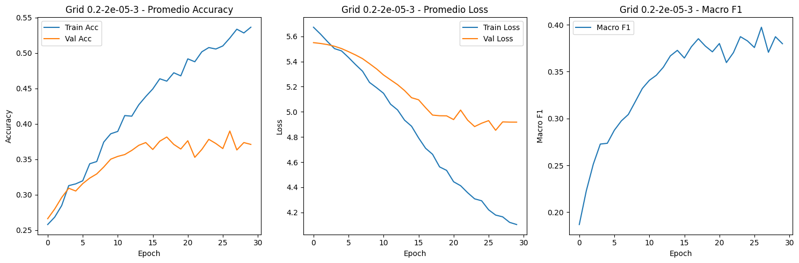
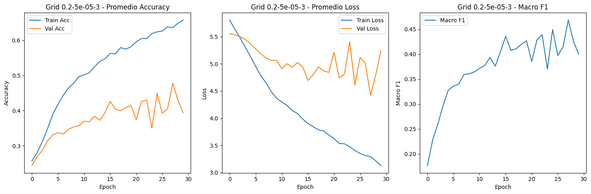
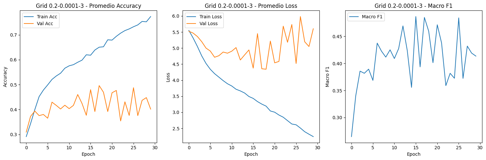
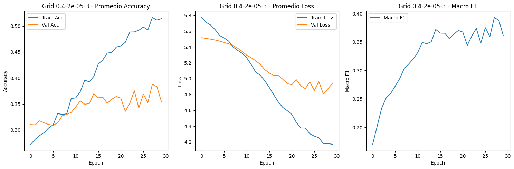
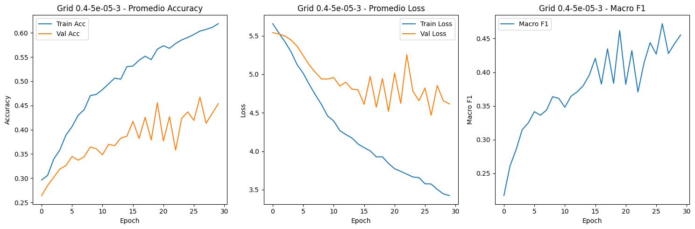
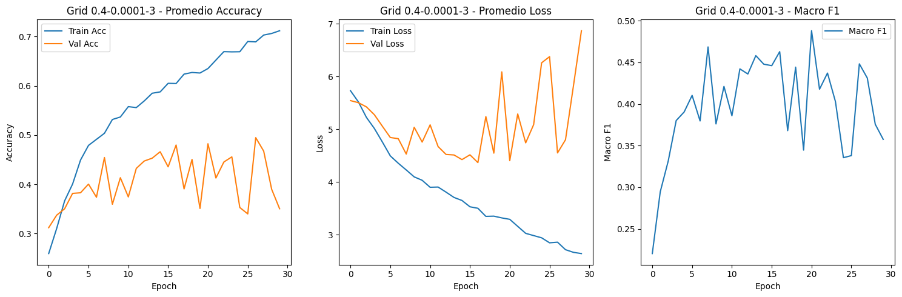
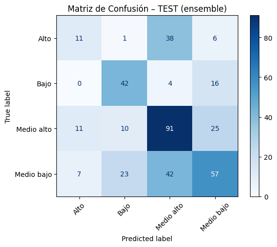

Modelo BiLSTM-CNN ATT#
# Librerías y Configuración Inicial
import pandas as pd
import torch
from sklearn.preprocessing import LabelEncoder, StandardScaler
from sklearn.model_selection import train_test_split, KFold
from transformers import AutoTokenizer, AutoModel
from torch.utils.data import DataLoader, Dataset
from sklearn.metrics import accuracy_score, classification_report, confusion_matrix, ConfusionMatrixDisplay, \
precision_score, recall_score, f1_score, roc_auc_score, log_loss
import matplotlib.pyplot as plt
import torch.nn as nn
import gc
import stanza
import os
import numpy as np
import math
from collections import Counter
from torch.optim import AdamW
from sklearn.feature_extraction.text import TfidfVectorizer
# Stanza y BERT
stanza.download("es", verbose=False)
nlp_stanza = stanza.Pipeline("es", processors="tokenize,pos,lemma")
tokenizer = AutoTokenizer.from_pretrained("dccuchile/bert-base-spanish-wwm-cased")
model_bert = AutoModel.from_pretrained("dccuchile/bert-base-spanish-wwm-cased")
device = torch.device('cuda') if torch.cuda.is_available() else torch.device('cpu')
model_bert.to(device)
print(f"Usando dispositivo: {device}")
c:\Users\Sistemas\anaconda3\envs\entorno_actualizado\Lib\site-packages\tqdm\auto.py:21: TqdmWarning: IProgress not found. Please update jupyter and ipywidgets. See https://ipywidgets.readthedocs.io/en/stable/user_install.html
from .autonotebook import tqdm as notebook_tqdm
c:\Users\Sistemas\anaconda3\envs\entorno_actualizado\Lib\site-packages\stanza\models\tokenization\trainer.py:82: FutureWarning: You are using `torch.load` with `weights_only=False` (the current default value), which uses the default pickle module implicitly. It is possible to construct malicious pickle data which will execute arbitrary code during unpickling (See https://github.com/pytorch/pytorch/blob/main/SECURITY.md#untrusted-models for more details). In a future release, the default value for `weights_only` will be flipped to `True`. This limits the functions that could be executed during unpickling. Arbitrary objects will no longer be allowed to be loaded via this mode unless they are explicitly allowlisted by the user via `torch.serialization.add_safe_globals`. We recommend you start setting `weights_only=True` for any use case where you don't have full control of the loaded file. Please open an issue on GitHub for any issues related to this experimental feature.
checkpoint = torch.load(filename, lambda storage, loc: storage)
c:\Users\Sistemas\anaconda3\envs\entorno_actualizado\Lib\site-packages\stanza\models\mwt\trainer.py:201: FutureWarning: You are using `torch.load` with `weights_only=False` (the current default value), which uses the default pickle module implicitly. It is possible to construct malicious pickle data which will execute arbitrary code during unpickling (See https://github.com/pytorch/pytorch/blob/main/SECURITY.md#untrusted-models for more details). In a future release, the default value for `weights_only` will be flipped to `True`. This limits the functions that could be executed during unpickling. Arbitrary objects will no longer be allowed to be loaded via this mode unless they are explicitly allowlisted by the user via `torch.serialization.add_safe_globals`. We recommend you start setting `weights_only=True` for any use case where you don't have full control of the loaded file. Please open an issue on GitHub for any issues related to this experimental feature.
checkpoint = torch.load(filename, lambda storage, loc: storage)
c:\Users\Sistemas\anaconda3\envs\entorno_actualizado\Lib\site-packages\stanza\models\pos\trainer.py:139: FutureWarning: You are using `torch.load` with `weights_only=False` (the current default value), which uses the default pickle module implicitly. It is possible to construct malicious pickle data which will execute arbitrary code during unpickling (See https://github.com/pytorch/pytorch/blob/main/SECURITY.md#untrusted-models for more details). In a future release, the default value for `weights_only` will be flipped to `True`. This limits the functions that could be executed during unpickling. Arbitrary objects will no longer be allowed to be loaded via this mode unless they are explicitly allowlisted by the user via `torch.serialization.add_safe_globals`. We recommend you start setting `weights_only=True` for any use case where you don't have full control of the loaded file. Please open an issue on GitHub for any issues related to this experimental feature.
checkpoint = torch.load(filename, lambda storage, loc: storage)
c:\Users\Sistemas\anaconda3\envs\entorno_actualizado\Lib\site-packages\stanza\models\common\pretrain.py:56: FutureWarning: You are using `torch.load` with `weights_only=False` (the current default value), which uses the default pickle module implicitly. It is possible to construct malicious pickle data which will execute arbitrary code during unpickling (See https://github.com/pytorch/pytorch/blob/main/SECURITY.md#untrusted-models for more details). In a future release, the default value for `weights_only` will be flipped to `True`. This limits the functions that could be executed during unpickling. Arbitrary objects will no longer be allowed to be loaded via this mode unless they are explicitly allowlisted by the user via `torch.serialization.add_safe_globals`. We recommend you start setting `weights_only=True` for any use case where you don't have full control of the loaded file. Please open an issue on GitHub for any issues related to this experimental feature.
data = torch.load(self.filename, lambda storage, loc: storage)
c:\Users\Sistemas\anaconda3\envs\entorno_actualizado\Lib\site-packages\stanza\models\common\char_model.py:271: FutureWarning: You are using `torch.load` with `weights_only=False` (the current default value), which uses the default pickle module implicitly. It is possible to construct malicious pickle data which will execute arbitrary code during unpickling (See https://github.com/pytorch/pytorch/blob/main/SECURITY.md#untrusted-models for more details). In a future release, the default value for `weights_only` will be flipped to `True`. This limits the functions that could be executed during unpickling. Arbitrary objects will no longer be allowed to be loaded via this mode unless they are explicitly allowlisted by the user via `torch.serialization.add_safe_globals`. We recommend you start setting `weights_only=True` for any use case where you don't have full control of the loaded file. Please open an issue on GitHub for any issues related to this experimental feature.
state = torch.load(filename, lambda storage, loc: storage)
c:\Users\Sistemas\anaconda3\envs\entorno_actualizado\Lib\site-packages\stanza\models\lemma\trainer.py:239: FutureWarning: You are using `torch.load` with `weights_only=False` (the current default value), which uses the default pickle module implicitly. It is possible to construct malicious pickle data which will execute arbitrary code during unpickling (See https://github.com/pytorch/pytorch/blob/main/SECURITY.md#untrusted-models for more details). In a future release, the default value for `weights_only` will be flipped to `True`. This limits the functions that could be executed during unpickling. Arbitrary objects will no longer be allowed to be loaded via this mode unless they are explicitly allowlisted by the user via `torch.serialization.add_safe_globals`. We recommend you start setting `weights_only=True` for any use case where you don't have full control of the loaded file. Please open an issue on GitHub for any issues related to this experimental feature.
checkpoint = torch.load(filename, lambda storage, loc: storage)
Some weights of BertModel were not initialized from the model checkpoint at dccuchile/bert-base-spanish-wwm-cased and are newly initialized: ['bert.pooler.dense.bias', 'bert.pooler.dense.weight']
You should probably TRAIN this model on a down-stream task to be able to use it for predictions and inference.
Usando dispositivo: cuda
# Datos
DATA_PATH = r"C:\Users\Sistemas\Desktop\PFINAL\nuevo_df.csv"
df = pd.read_csv(DATA_PATH, encoding="utf-8-sig")
#df = df.head(300)
if "clean_text" not in df.columns:
txt_col = next(c for c in df.select_dtypes("object").columns if c != "Nivel_f")
pref = os.path.commonprefix(df[txt_col].tolist())
df["clean_text"] = df[txt_col].str[len(pref):].str.strip()
label_encoder = LabelEncoder()
df["etiqueta_codificada"] = label_encoder.fit_transform(df["Nivel_f"])
print(df[["Nivel_f", "clean_text"]].head())
print(df["Nivel_f"].value_counts())
X_text = df["clean_text"]
y = df["etiqueta_codificada"]
X_text_train, X_text_test, y_train, y_test = train_test_split(
X_text, y, test_size=0.2, random_state=42, stratify=y
)
Nivel_f clean_text
0 Medio bajo otro aspecto que podemos tener en cuenta es la...
1 Medio alto En segundo lugar, el aprendizaje de lectura y ...
2 Medio bajo en segundo lugar, fomentando estas practicas d...
3 Medio bajo En segundo lugar, la lectura y escritura es fu...
4 Medio bajo La lectura y la escritura son importantes para...
Nivel_f
Medio alto 687
Medio bajo 644
Bajo 310
Alto 279
Name: count, dtype: int64
from itertools import product
dropout_grid = [0.2, 0.4]
learning_rate_grid = [2e-5, 5e-5, 1e-4]
n_splits_grid = [3]
EPOCHS = 30
# Funciones de Features Lingüísticas y Distancias
def extraer_caracteristicas_avanzadas(texto, tokenizer, model, device):
doc = nlp_stanza(texto)
oraciones = [s.text for s in doc.sentences]
palabras = [w.text.lower() for s in doc.sentences for w in s.words if w.text.isalpha()]
tipos = set(palabras)
tokens = len(palabras)
tipos_count = len(tipos)
hapax = sum(1 for v in Counter(palabras).values() if v == 1)
ttr = tipos_count / tokens if tokens else 0
rttr = tipos_count / np.sqrt(2 * tokens) if tokens else 0
cttr = tipos_count / np.sqrt(2 * tokens) if tokens else 0
maas = (math.log(tokens) - math.log(tipos_count)) / (math.log(tokens)**2) if tokens > 1 and tipos_count > 1 else 0
herdan = math.log(tipos_count) / math.log(tokens) if tokens > 1 and tipos_count > 1 else 0
honore = 100 * math.log(tokens) / (1 - (hapax / tipos_count)) if tipos_count > 1 and (1 - (hapax / tipos_count)) != 0 else 0
def mattr(palabras, window_size=50):
if len(palabras) < window_size:
return ttr
return np.mean([len(set(palabras[i:i+window_size]))/window_size
for i in range(len(palabras)-window_size+1)])
def mtld(palabras, threshold=0.72):
factors, factor_length, ttr_temp = 0, 0, []
for i, word in enumerate(palabras, 1):
ttr_temp.append(word)
if len(set(ttr_temp)) / len(ttr_temp) <= threshold:
factors += 1
factor_length += len(ttr_temp)
ttr_temp = []
if ttr_temp:
factors += 1
factor_length += len(ttr_temp)
return factor_length / factors if factors else 0
mattr_val = mattr(palabras)
mtld_val = mtld(palabras)
parrafos = [p for p in texto.split('\n') if p.strip()]
n_parrafos = len(parrafos)
n_oraciones = len(oraciones)
oraciones_lens = [len([w for w in s.split() if w.isalpha()]) for s in oraciones]
parrafos_lens = [len([w for w in p.split() if w.isalpha()]) for p in parrafos]
return {
"ttr": ttr, "rttr": rttr, "cttr": cttr, "mattr": mattr_val, "mtld": mtld_val,
"honore": honore, "maas": maas, "herdan": herdan,
"prom_oraciones_por_parrafo": n_oraciones / n_parrafos if n_parrafos else 0,
"prom_longitud_oracion": np.mean(oraciones_lens) if oraciones_lens else 0,
"desv_longitud_oracion": np.std(oraciones_lens) if oraciones_lens else 0,
"prom_longitud_parrafo": np.mean(parrafos_lens) if parrafos_lens else 0,
"desv_longitud_parrafo": np.std(parrafos_lens) if parrafos_lens else 0,
}
def tokenizar_datos(textos, tokenizer, max_len=512):
return tokenizer(
textos,
truncation=True,
padding='max_length',
max_length=max_len,
return_tensors='pt'
)
def obtener_embedding_promedio(texto, tokenizer, model, device):
inputs = tokenizer(texto, return_tensors="pt", truncation=True, padding=True).to(device)
with torch.no_grad():
outputs = model(**inputs)
embedding_texto = outputs.last_hidden_state.mean(dim=1).cpu().detach().numpy().squeeze()
return embedding_texto
def calcular_centroides_por_clase(X_text_train, y_train, tokenizer, model, device):
centroids = {}
y_arr = np.array(y_train)
for class_idx in np.unique(y_arr):
idxs = np.where(y_arr == class_idx)[0]
textos = X_text_train.iloc[idxs].tolist()
embeddings = [obtener_embedding_promedio(t, tokenizer, model, device) for t in textos]
centroids[class_idx] = np.mean(embeddings, axis=0)
return centroids
def agregar_distancia_a_centroides(texto, tokenizer, model, device, class_centroids):
embedding = obtener_embedding_promedio(texto, tokenizer, model, device)
return {f"dist_centroide_{cls}": np.linalg.norm(embedding - centroid) for cls, centroid in class_centroids.items()}
# Modelos y Dataset
class TextDataset(Dataset):
def __init__(self, encodings, features, labels):
self.encodings = encodings
self.features = features.reset_index(drop=True)
self.labels = labels.reset_index(drop=True)
def __getitem__(self, idx):
item = {key: val[idx] for key, val in self.encodings.items()}
item['features'] = torch.tensor(self.features.iloc[idx].values, dtype=torch.float)
item['labels'] = torch.tensor(self.labels.iloc[idx], dtype=torch.long)
return item
def __len__(self):
return len(self.labels)
# Sección de atención ------------------
import torch.nn.functional as F
class Attention(nn.Module):
def __init__(self, hidden_dim):
super().__init__()
self.attn = nn.Linear(hidden_dim, 1)
def forward(self, lstm_output):
# lstm_output: (batch_size, seq_len, hidden_dim)
attn_weights = F.softmax(self.attn(lstm_output), dim=1) # (batch_size, seq_len, 1)
context = torch.sum(attn_weights * lstm_output, dim=1) # (batch_size, hidden_dim)
return context
class BiLSTM_CNN_Text_Classifier(nn.Module):
def __init__(self, bert_model, lstm_hidden_dim, n_filters, filter_sizes, output_dim, dropout, n_linguistic_features):
super().__init__()
self.bert = bert_model
embedding_dim = self.bert.config.hidden_size
self.lstm = nn.LSTM(embedding_dim, lstm_hidden_dim, num_layers=2, bidirectional=True, batch_first=True)
self.attn = Attention(2 * lstm_hidden_dim) # BiLSTM output
self.convs = nn.ModuleList([
nn.Conv2d(in_channels=1, out_channels=n_filters, kernel_size=(fs, 2 * lstm_hidden_dim))
for fs in filter_sizes
])
self.fc1 = nn.Linear(len(filter_sizes) * n_filters + 2 * lstm_hidden_dim + n_linguistic_features, 128)
self.bn1 = nn.BatchNorm1d(128)
self.fc2 = nn.Linear(128, output_dim)
self.dropout = nn.Dropout(dropout)
def forward(self, input_ids, attention_mask, features):
bert_outputs = self.bert(input_ids=input_ids, attention_mask=attention_mask)
embeddings = bert_outputs.last_hidden_state # (batch, seq_len, bert_dim)
lstm_out, _ = self.lstm(embeddings) # (batch, seq_len, 2*lstm_h)
attn_vec = self.attn(lstm_out) # (batch, 2*lstm_h)
lstm_out_unsq = lstm_out.unsqueeze(1) # (batch, 1, seq_len, 2*lstm_h)
conved = [torch.relu(conv(lstm_out_unsq)).squeeze(3) for conv in self.convs]
pooled = [torch.max(conv, dim=2)[0] for conv in conved]
cat_cnn = self.dropout(torch.cat(pooled, dim=1))
# Combinamos (CNN features | Attention | Ling features)
cat = torch.cat((cat_cnn, attn_vec, features), dim=1)
x = self.dropout(F.relu(self.bn1(self.fc1(cat))))
return self.fc2(x)
# Entrenamiento KFold
resultados_grid = []
ensemble_preds_test = []
ensemble_probs_test = []
histories_allgrids = []
X_features_test_df = None
test_loader = None
feature_columns = None
scaler_global = None
from imblearn.over_sampling import RandomOverSampler
for dropout, lr, n_splits in product(dropout_grid, learning_rate_grid, n_splits_grid):
print(f"\n>>> Entrenando con dropout={dropout}, lr={lr}, folds={n_splits}")
kf = KFold(n_splits=n_splits, shuffle=True, random_state=42)
histories_folds_grid = []
metrics_val_folds = []
fold_probs_test = []
fold_preds_test = []
# Centroides por clase solo con train
class_centroids = calcular_centroides_por_clase(X_text_train, y_train, tokenizer, model_bert, device)
for fold, (train_index, val_index) in enumerate(kf.split(X_text_train)):
print(f"\n--- Procesando Fold {fold+1}/{n_splits} ---")
X_fold_train_text = X_text_train.iloc[train_index].tolist()
y_fold_train = pd.Series(y_train).iloc[train_index].reset_index(drop=True)
# Oversampling SOLO en clases minoritarias
class_names = list(label_encoder.classes_)
minority_names = ['Alto', 'Bajo']
minority_indices = [i for i, name in enumerate(class_names) if name in minority_names]
present_indices = [idx for idx in minority_indices if idx in set(y_fold_train)]
if len(present_indices) > 0:
y_train_counts = Counter(y_fold_train)
max_count = max([y_train_counts[idx] for idx in y_train_counts])
sampling_strategy = {idx: max_count for idx in present_indices}
oversampler = RandomOverSampler(sampling_strategy=sampling_strategy, random_state=42)
X_fold_train_text_overs, y_fold_train_overs = oversampler.fit_resample(
pd.DataFrame({'text': X_fold_train_text}), y_fold_train
)
X_fold_train_text = X_fold_train_text_overs['text'].tolist()
y_fold_train = y_fold_train_overs.reset_index(drop=True)
# Features lingüísticas + distancias
features_train_dicts = [
{**extraer_caracteristicas_avanzadas(text, tokenizer, model_bert, device),
**agregar_distancia_a_centroides(text, tokenizer, model_bert, device, class_centroids)}
for text in X_fold_train_text
]
X_fold_train_feats = pd.DataFrame(features_train_dicts)
# Features de validación
X_fold_val_text = X_text_train.iloc[val_index].tolist()
y_fold_val = pd.Series(y_train).iloc[val_index].reset_index(drop=True)
features_val_dicts = [
{**extraer_caracteristicas_avanzadas(text, tokenizer, model_bert, device),
**agregar_distancia_a_centroides(text, tokenizer, model_bert, device, class_centroids)}
for text in X_fold_val_text
]
X_fold_val_feats = pd.DataFrame(features_val_dicts)
# TF-IDF
tfidf_fold = TfidfVectorizer(max_features=5000)
tfidf_fold.fit(X_fold_train_text)
X_fold_train_feats["tfidf_avg"] = tfidf_fold.transform(X_fold_train_text).mean(axis=1).A1
X_fold_val_feats["tfidf_avg"] = tfidf_fold.transform(X_fold_val_text).mean(axis=1).A1
# Análisis de redundancia/correlación en train, para analizar
corr_matrix = X_fold_train_feats.corr().abs()
upper = corr_matrix.where(np.triu(np.ones(corr_matrix.shape), k=1).astype(bool))
to_drop = [column for column in upper.columns if any(upper[column] > 0.95)]
X_fold_train_feats.drop(columns=to_drop, inplace=True)
X_fold_val_feats.drop(columns=to_drop, inplace=True)
# Alineación y normalización
feature_columns = X_fold_train_feats.columns.tolist()
X_fold_train_feats = X_fold_train_feats[feature_columns]
X_fold_val_feats = X_fold_val_feats[feature_columns]
scaler_fold = StandardScaler()
scaler_fold.fit(X_fold_train_feats)
X_fold_train_feats = pd.DataFrame(scaler_fold.transform(X_fold_train_feats), columns=feature_columns)
X_fold_val_feats = pd.DataFrame(scaler_fold.transform(X_fold_val_feats), columns=feature_columns)
n_linguistic_features = len(feature_columns)
# Tokenización y DataLoader
train_encodings = tokenizar_datos(X_fold_train_text, tokenizer)
val_encodings = tokenizar_datos(X_fold_val_text, tokenizer)
train_dataset = TextDataset(train_encodings, X_fold_train_feats, y_fold_train)
val_dataset = TextDataset(val_encodings, X_fold_val_feats, y_fold_val)
train_loader = DataLoader(train_dataset, batch_size=256, shuffle=True)
val_loader = DataLoader(val_dataset, batch_size=256)
# Modelo para descongelar últimas 4 capas de BETO
model = BiLSTM_CNN_Text_Classifier(
bert_model=model_bert, lstm_hidden_dim=128, n_filters=50, filter_sizes=[2,3,4],
output_dim=len(label_encoder.classes_), dropout=dropout, n_linguistic_features=n_linguistic_features
).to(device)
for name, param in model.bert.named_parameters():
param.requires_grad = False
for name, param in list(model.bert.encoder.layer.named_parameters())[-4:]:
param.requires_grad = True
optimizer = AdamW(model.parameters(), lr=lr, weight_decay=0.01)
class_counts = Counter(y_fold_train)
total_count = sum(class_counts.values())
class_weights = {cls: total_count / count for cls, count in class_counts.items()}
weights = torch.tensor([class_weights[i] for i in range(len(class_counts))], dtype=torch.float).to(device)
class FocalLoss(nn.Module):
def __init__(self, alpha=1, gamma=1.5, weight=None, reduction='mean'):
super().__init__()
self.alpha = alpha
self.gamma = gamma
self.weight = weight
self.reduction = reduction
def forward(self, inputs, targets):
ce_loss = nn.CrossEntropyLoss(weight=self.weight, reduction='none')(inputs, targets)
pt = torch.exp(-ce_loss)
focal_loss = self.alpha * (1-pt)**self.gamma * ce_loss
if self.reduction == 'mean':
return focal_loss.mean()
elif self.reduction == 'sum':
return focal_loss.sum()
else:
return focal_loss
loss_fn = FocalLoss(weight=weights)
def entrenar_modelo(model, loader, optimizer):
model.train()
total_loss, total_correct = 0, 0
for batch in loader:
optimizer.zero_grad()
inputs = {key: val.to(device) for key, val in batch.items() if key not in ['features', 'labels']}
features = batch['features'].to(device)
labels = batch['labels'].to(device)
outputs = model(input_ids=inputs['input_ids'], attention_mask=inputs['attention_mask'], features=features)
loss = loss_fn(outputs, labels)
loss.backward()
optimizer.step()
total_loss += loss.item()
preds = outputs.argmax(dim=1)
total_correct += (preds == labels).sum().item()
return total_loss / len(loader), total_correct / len(loader.dataset)
def evaluar_modelo(model, loader):
model.eval()
true_labels, predictions = [], []
with torch.no_grad():
for batch in loader:
inputs = {key: val.to(device) for key, val in batch.items() if key not in ['features', 'labels']}
features = batch['features'].to(device)
labels = batch['labels'].to(device)
outputs = model(input_ids=inputs['input_ids'], attention_mask=inputs['attention_mask'], features=features)
preds = outputs.argmax(dim=1)
true_labels.extend(labels.cpu().numpy())
predictions.extend(preds.cpu().numpy())
return true_labels, predictions
fold_history = {'train_acc': [], 'val_acc': [], 'train_loss': [], 'val_loss': [], 'val_f1': []}
for epoch in range(EPOCHS):
train_loss, train_acc = entrenar_modelo(model, train_loader, optimizer)
true_labels_val, predictions_val = evaluar_modelo(model, val_loader)
val_accuracy = accuracy_score(true_labels_val, predictions_val)
val_f1 = f1_score(true_labels_val, predictions_val, average='macro', zero_division=0)
model.eval()
total_val_loss = 0
with torch.no_grad():
for batch in val_loader:
inputs = {key: val.to(device) for key, val in batch.items() if key not in ['features', 'labels']}
features = batch['features'].to(device)
labels = batch['labels'].to(device)
outputs = model(input_ids=inputs['input_ids'], attention_mask=inputs['attention_mask'], features=features)
loss = loss_fn(outputs, labels)
total_val_loss += loss.item()
val_loss = total_val_loss / len(val_loader)
fold_history['train_acc'].append(train_acc)
fold_history['val_acc'].append(val_accuracy)
fold_history['val_f1'].append(val_f1)
fold_history['train_loss'].append(train_loss)
fold_history['val_loss'].append(val_loss)
print(f"Grid {dropout}-{lr}-{n_splits}, Fold {fold+1}, Epoch {epoch+1} | Train Acc: {train_acc:.3f} | Val Acc: {val_accuracy:.3f} | MacroF1: {val_f1:.3f}")
metrics_val_folds.append({
"accuracy": accuracy_score(true_labels_val, predictions_val),
"precision": precision_score(true_labels_val, predictions_val, average='macro', zero_division=0),
"recall": recall_score(true_labels_val, predictions_val, average='macro', zero_division=0),
"f1": f1_score(true_labels_val, predictions_val, average='macro', zero_division=0)
})
histories_folds_grid.append(fold_history)
# BLOQUE DE FEATURES DE TEST PARA ENSEMBLE
print(f"Procesando features de test para ensemble en Fold {fold+1}...")
features_test_dicts = [
{**extraer_caracteristicas_avanzadas(text, tokenizer, model_bert, device),
**agregar_distancia_a_centroides(text, tokenizer, model_bert, device, class_centroids)}
for text in X_text_test.tolist()
]
X_features_test_df = pd.DataFrame(features_test_dicts)
X_features_test_df["tfidf_avg"] = tfidf_fold.transform(X_text_test.tolist()).mean(axis=1).A1
# Alineación estricta (sólo columnas del fold actual)
for col in feature_columns:
if col not in X_features_test_df.columns:
X_features_test_df[col] = 0.0
X_features_test_df = X_features_test_df[feature_columns]
assert list(X_features_test_df.columns) == feature_columns, (
f"Columnas en test y train no coinciden en fold {fold+1}:\nTest: {list(X_features_test_df.columns)}\nTrain: {feature_columns}"
)
X_features_test_df = pd.DataFrame(scaler_fold.transform(X_features_test_df), columns=feature_columns)
test_encodings = tokenizar_datos(X_text_test.tolist(), tokenizer)
test_dataset = TextDataset(test_encodings, X_features_test_df, pd.Series(y_test).reset_index(drop=True))
test_loader = DataLoader(test_dataset, batch_size=256)
# Predicciones en test
def get_probs(model, loader):
model.eval()
probs = []
with torch.no_grad():
for batch in loader:
inputs = {key: val.to(device) for key, val in batch.items() if key not in ['features', 'labels']}
features = batch['features'].to(device)
outputs = model(input_ids=inputs['input_ids'], attention_mask=inputs['attention_mask'], features=features)
out_probs = torch.softmax(outputs, dim=1).cpu().numpy()
if out_probs.ndim == 1:
out_probs = out_probs.reshape(-1, 1)
probs.append(out_probs)
probs_concat = np.concatenate(probs)
if probs_concat.ndim == 1:
probs_concat = probs_concat.reshape(-1, 1)
return probs_concat
probs_test = get_probs(model, test_loader)
fold_probs_test.append(probs_test)
# Resultados fold promedio
avg_train_acc = np.mean([h['train_acc'] for h in histories_folds_grid], axis=0)
avg_val_acc = np.mean([h['val_acc'] for h in histories_folds_grid], axis=0)
avg_train_loss = np.mean([h['train_loss'] for h in histories_folds_grid], axis=0)
avg_val_loss = np.mean([h['val_loss'] for h in histories_folds_grid], axis=0)
avg_val_f1 = np.mean([h['val_f1'] for h in histories_folds_grid], axis=0)
plt.figure(figsize=(15,5))
plt.subplot(1,3,1)
plt.plot(avg_train_acc, label='Train Acc')
plt.plot(avg_val_acc, label='Val Acc')
plt.xlabel('Epoch')
plt.ylabel('Accuracy')
plt.title(f'Grid {dropout}-{lr}-{n_splits} - Promedio Accuracy')
plt.legend()
plt.subplot(1,3,2)
plt.plot(avg_train_loss, label='Train Loss')
plt.plot(avg_val_loss, label='Val Loss')
plt.xlabel('Epoch')
plt.ylabel('Loss')
plt.title(f'Grid {dropout}-{lr}-{n_splits} - Promedio Loss')
plt.legend()
plt.subplot(1,3,3)
plt.plot(avg_val_f1, label='Macro F1')
plt.xlabel('Epoch')
plt.ylabel('Macro F1')
plt.title(f'Grid {dropout}-{lr}-{n_splits} - Macro F1')
plt.legend()
plt.tight_layout()
plt.show()
if metrics_val_folds:
df_metrics_val = pd.DataFrame(metrics_val_folds)
print("\nMétricas en validación (media y std):")
print(df_metrics_val.mean())
print(df_metrics_val.std())
# ENSEMBLE FINAL -------------------------------------------------
fold_probs_test = np.array(fold_probs_test)
print("fold_probs_test shape:", fold_probs_test.shape)
if fold_probs_test.ndim == 2:
if fold_probs_test.shape[1] > 1:
fold_probs_test = fold_probs_test[None, :, :]
else:
fold_probs_test = fold_probs_test[None, :, None]
elif fold_probs_test.ndim == 1:
fold_probs_test = fold_probs_test[None, :, None]
# Calcula el promedio sobre folds (primer eje)
ensemble_probs = np.mean(fold_probs_test, axis=0)
print("ensemble_probs shape:", ensemble_probs.shape)
if ensemble_probs.ndim == 1:
# Solo una clase, fuerza a (num_muestras, 1)
ensemble_probs = ensemble_probs.reshape(-1, 1)
ensemble_pred = np.argmax(ensemble_probs, axis=1)
print("ensemble_pred shape:", ensemble_pred.shape)
print("y_test shape:", np.shape(y_test))
# Check de dimensiones antes de calcular métricas
assert len(y_test) == len(ensemble_pred), (
f"Inconsistencia de longitud: y_test={len(y_test)}, ensemble_pred={len(ensemble_pred)}"
)
acc_ensemble = accuracy_score(y_test, ensemble_pred)
try:
auc_ensemble = roc_auc_score(y_test, ensemble_probs, multi_class="ovr", average='macro')
except:
auc_ensemble = np.nan
macrof1_ensemble = f1_score(y_test, ensemble_pred, average='macro', zero_division=0)
resultados_grid.append({
"dropout": dropout,
"learning_rate": lr,
"n_splits": n_splits,
"ensemble_accuracy_test": acc_ensemble,
"ensemble_auc_test": auc_ensemble,
"ensemble_macro_f1": macrof1_ensemble,
"val_acc_mean": df_metrics_val["accuracy"].mean(),
"val_acc_std": df_metrics_val["accuracy"].std()
})
ensemble_preds_test.append(ensemble_pred)
ensemble_probs_test.append(ensemble_probs)
histories_allgrids.append(histories_folds_grid)
>>> Entrenando con dropout=0.2, lr=2e-05, folds=3
--- Procesando Fold 1/3 ---
Grid 0.2-2e-05-3, Fold 1, Epoch 1 | Train Acc: 0.273 | Val Acc: 0.152 | MacroF1: 0.111
Grid 0.2-2e-05-3, Fold 1, Epoch 2 | Train Acc: 0.275 | Val Acc: 0.209 | MacroF1: 0.205
Grid 0.2-2e-05-3, Fold 1, Epoch 3 | Train Acc: 0.274 | Val Acc: 0.258 | MacroF1: 0.264
Grid 0.2-2e-05-3, Fold 1, Epoch 4 | Train Acc: 0.317 | Val Acc: 0.277 | MacroF1: 0.281
Grid 0.2-2e-05-3, Fold 1, Epoch 5 | Train Acc: 0.337 | Val Acc: 0.289 | MacroF1: 0.293
Grid 0.2-2e-05-3, Fold 1, Epoch 6 | Train Acc: 0.330 | Val Acc: 0.299 | MacroF1: 0.303
Grid 0.2-2e-05-3, Fold 1, Epoch 7 | Train Acc: 0.344 | Val Acc: 0.309 | MacroF1: 0.311
Grid 0.2-2e-05-3, Fold 1, Epoch 8 | Train Acc: 0.347 | Val Acc: 0.312 | MacroF1: 0.315
Grid 0.2-2e-05-3, Fold 1, Epoch 9 | Train Acc: 0.374 | Val Acc: 0.312 | MacroF1: 0.315
Grid 0.2-2e-05-3, Fold 1, Epoch 10 | Train Acc: 0.390 | Val Acc: 0.328 | MacroF1: 0.332
Grid 0.2-2e-05-3, Fold 1, Epoch 11 | Train Acc: 0.394 | Val Acc: 0.332 | MacroF1: 0.336
Grid 0.2-2e-05-3, Fold 1, Epoch 12 | Train Acc: 0.405 | Val Acc: 0.330 | MacroF1: 0.336
Grid 0.2-2e-05-3, Fold 1, Epoch 13 | Train Acc: 0.410 | Val Acc: 0.332 | MacroF1: 0.339
Grid 0.2-2e-05-3, Fold 1, Epoch 14 | Train Acc: 0.411 | Val Acc: 0.350 | MacroF1: 0.358
Grid 0.2-2e-05-3, Fold 1, Epoch 15 | Train Acc: 0.424 | Val Acc: 0.344 | MacroF1: 0.352
Grid 0.2-2e-05-3, Fold 1, Epoch 16 | Train Acc: 0.433 | Val Acc: 0.354 | MacroF1: 0.362
Grid 0.2-2e-05-3, Fold 1, Epoch 17 | Train Acc: 0.452 | Val Acc: 0.367 | MacroF1: 0.373
Grid 0.2-2e-05-3, Fold 1, Epoch 18 | Train Acc: 0.448 | Val Acc: 0.371 | MacroF1: 0.378
Grid 0.2-2e-05-3, Fold 1, Epoch 19 | Train Acc: 0.455 | Val Acc: 0.375 | MacroF1: 0.385
Grid 0.2-2e-05-3, Fold 1, Epoch 20 | Train Acc: 0.458 | Val Acc: 0.336 | MacroF1: 0.343
Grid 0.2-2e-05-3, Fold 1, Epoch 21 | Train Acc: 0.480 | Val Acc: 0.381 | MacroF1: 0.387
Grid 0.2-2e-05-3, Fold 1, Epoch 22 | Train Acc: 0.475 | Val Acc: 0.320 | MacroF1: 0.329
Grid 0.2-2e-05-3, Fold 1, Epoch 23 | Train Acc: 0.481 | Val Acc: 0.383 | MacroF1: 0.386
Grid 0.2-2e-05-3, Fold 1, Epoch 24 | Train Acc: 0.479 | Val Acc: 0.365 | MacroF1: 0.370
Grid 0.2-2e-05-3, Fold 1, Epoch 25 | Train Acc: 0.484 | Val Acc: 0.377 | MacroF1: 0.386
Grid 0.2-2e-05-3, Fold 1, Epoch 26 | Train Acc: 0.493 | Val Acc: 0.355 | MacroF1: 0.366
Grid 0.2-2e-05-3, Fold 1, Epoch 27 | Train Acc: 0.507 | Val Acc: 0.400 | MacroF1: 0.406
Grid 0.2-2e-05-3, Fold 1, Epoch 28 | Train Acc: 0.509 | Val Acc: 0.369 | MacroF1: 0.371
Grid 0.2-2e-05-3, Fold 1, Epoch 29 | Train Acc: 0.509 | Val Acc: 0.389 | MacroF1: 0.399
Grid 0.2-2e-05-3, Fold 1, Epoch 30 | Train Acc: 0.508 | Val Acc: 0.371 | MacroF1: 0.368
Procesando features de test para ensemble en Fold 1...
--- Procesando Fold 2/3 ---
Grid 0.2-2e-05-3, Fold 2, Epoch 1 | Train Acc: 0.253 | Val Acc: 0.361 | MacroF1: 0.245
Grid 0.2-2e-05-3, Fold 2, Epoch 2 | Train Acc: 0.277 | Val Acc: 0.363 | MacroF1: 0.261
Grid 0.2-2e-05-3, Fold 2, Epoch 3 | Train Acc: 0.303 | Val Acc: 0.359 | MacroF1: 0.277
Grid 0.2-2e-05-3, Fold 2, Epoch 4 | Train Acc: 0.308 | Val Acc: 0.371 | MacroF1: 0.304
Grid 0.2-2e-05-3, Fold 2, Epoch 5 | Train Acc: 0.317 | Val Acc: 0.346 | MacroF1: 0.292
Grid 0.2-2e-05-3, Fold 2, Epoch 6 | Train Acc: 0.325 | Val Acc: 0.344 | MacroF1: 0.302
Grid 0.2-2e-05-3, Fold 2, Epoch 7 | Train Acc: 0.361 | Val Acc: 0.334 | MacroF1: 0.300
Grid 0.2-2e-05-3, Fold 2, Epoch 8 | Train Acc: 0.352 | Val Acc: 0.338 | MacroF1: 0.305
Grid 0.2-2e-05-3, Fold 2, Epoch 9 | Train Acc: 0.375 | Val Acc: 0.354 | MacroF1: 0.326
Grid 0.2-2e-05-3, Fold 2, Epoch 10 | Train Acc: 0.378 | Val Acc: 0.365 | MacroF1: 0.337
Grid 0.2-2e-05-3, Fold 2, Epoch 11 | Train Acc: 0.391 | Val Acc: 0.355 | MacroF1: 0.332
Grid 0.2-2e-05-3, Fold 2, Epoch 12 | Train Acc: 0.421 | Val Acc: 0.355 | MacroF1: 0.331
Grid 0.2-2e-05-3, Fold 2, Epoch 13 | Train Acc: 0.417 | Val Acc: 0.359 | MacroF1: 0.336
Grid 0.2-2e-05-3, Fold 2, Epoch 14 | Train Acc: 0.433 | Val Acc: 0.361 | MacroF1: 0.345
Grid 0.2-2e-05-3, Fold 2, Epoch 15 | Train Acc: 0.436 | Val Acc: 0.371 | MacroF1: 0.360
Grid 0.2-2e-05-3, Fold 2, Epoch 16 | Train Acc: 0.454 | Val Acc: 0.359 | MacroF1: 0.346
Grid 0.2-2e-05-3, Fold 2, Epoch 17 | Train Acc: 0.468 | Val Acc: 0.379 | MacroF1: 0.369
Grid 0.2-2e-05-3, Fold 2, Epoch 18 | Train Acc: 0.454 | Val Acc: 0.373 | MacroF1: 0.367
Grid 0.2-2e-05-3, Fold 2, Epoch 19 | Train Acc: 0.473 | Val Acc: 0.369 | MacroF1: 0.365
Grid 0.2-2e-05-3, Fold 2, Epoch 20 | Train Acc: 0.467 | Val Acc: 0.381 | MacroF1: 0.381
Grid 0.2-2e-05-3, Fold 2, Epoch 21 | Train Acc: 0.492 | Val Acc: 0.375 | MacroF1: 0.374
Grid 0.2-2e-05-3, Fold 2, Epoch 22 | Train Acc: 0.492 | Val Acc: 0.389 | MacroF1: 0.390
Grid 0.2-2e-05-3, Fold 2, Epoch 23 | Train Acc: 0.507 | Val Acc: 0.332 | MacroF1: 0.335
Grid 0.2-2e-05-3, Fold 2, Epoch 24 | Train Acc: 0.520 | Val Acc: 0.383 | MacroF1: 0.389
Grid 0.2-2e-05-3, Fold 2, Epoch 25 | Train Acc: 0.513 | Val Acc: 0.369 | MacroF1: 0.377
Grid 0.2-2e-05-3, Fold 2, Epoch 26 | Train Acc: 0.512 | Val Acc: 0.367 | MacroF1: 0.374
Grid 0.2-2e-05-3, Fold 2, Epoch 27 | Train Acc: 0.527 | Val Acc: 0.344 | MacroF1: 0.352
Grid 0.2-2e-05-3, Fold 2, Epoch 28 | Train Acc: 0.547 | Val Acc: 0.344 | MacroF1: 0.351
Grid 0.2-2e-05-3, Fold 2, Epoch 29 | Train Acc: 0.539 | Val Acc: 0.342 | MacroF1: 0.361
Grid 0.2-2e-05-3, Fold 2, Epoch 30 | Train Acc: 0.555 | Val Acc: 0.365 | MacroF1: 0.379
Procesando features de test para ensemble en Fold 2...
--- Procesando Fold 3/3 ---
Grid 0.2-2e-05-3, Fold 3, Epoch 1 | Train Acc: 0.248 | Val Acc: 0.285 | MacroF1: 0.205
Grid 0.2-2e-05-3, Fold 3, Epoch 2 | Train Acc: 0.254 | Val Acc: 0.268 | MacroF1: 0.202
Grid 0.2-2e-05-3, Fold 3, Epoch 3 | Train Acc: 0.278 | Val Acc: 0.271 | MacroF1: 0.213
Grid 0.2-2e-05-3, Fold 3, Epoch 4 | Train Acc: 0.314 | Val Acc: 0.279 | MacroF1: 0.233
Grid 0.2-2e-05-3, Fold 3, Epoch 5 | Train Acc: 0.292 | Val Acc: 0.281 | MacroF1: 0.235
Grid 0.2-2e-05-3, Fold 3, Epoch 6 | Train Acc: 0.305 | Val Acc: 0.305 | MacroF1: 0.258
Grid 0.2-2e-05-3, Fold 3, Epoch 7 | Train Acc: 0.327 | Val Acc: 0.328 | MacroF1: 0.281
Grid 0.2-2e-05-3, Fold 3, Epoch 8 | Train Acc: 0.342 | Val Acc: 0.338 | MacroF1: 0.292
Grid 0.2-2e-05-3, Fold 3, Epoch 9 | Train Acc: 0.374 | Val Acc: 0.352 | MacroF1: 0.313
Grid 0.2-2e-05-3, Fold 3, Epoch 10 | Train Acc: 0.391 | Val Acc: 0.357 | MacroF1: 0.326
Grid 0.2-2e-05-3, Fold 3, Epoch 11 | Train Acc: 0.383 | Val Acc: 0.375 | MacroF1: 0.353
Grid 0.2-2e-05-3, Fold 3, Epoch 12 | Train Acc: 0.410 | Val Acc: 0.385 | MacroF1: 0.371
Grid 0.2-2e-05-3, Fold 3, Epoch 13 | Train Acc: 0.406 | Val Acc: 0.396 | MacroF1: 0.390
Grid 0.2-2e-05-3, Fold 3, Epoch 14 | Train Acc: 0.436 | Val Acc: 0.398 | MacroF1: 0.397
Grid 0.2-2e-05-3, Fold 3, Epoch 15 | Train Acc: 0.457 | Val Acc: 0.406 | MacroF1: 0.407
Grid 0.2-2e-05-3, Fold 3, Epoch 16 | Train Acc: 0.460 | Val Acc: 0.379 | MacroF1: 0.386
Grid 0.2-2e-05-3, Fold 3, Epoch 17 | Train Acc: 0.471 | Val Acc: 0.381 | MacroF1: 0.388
Grid 0.2-2e-05-3, Fold 3, Epoch 18 | Train Acc: 0.479 | Val Acc: 0.400 | MacroF1: 0.410
Grid 0.2-2e-05-3, Fold 3, Epoch 19 | Train Acc: 0.488 | Val Acc: 0.369 | MacroF1: 0.382
Grid 0.2-2e-05-3, Fold 3, Epoch 20 | Train Acc: 0.479 | Val Acc: 0.377 | MacroF1: 0.390
Grid 0.2-2e-05-3, Fold 3, Epoch 21 | Train Acc: 0.503 | Val Acc: 0.373 | MacroF1: 0.379
Grid 0.2-2e-05-3, Fold 3, Epoch 22 | Train Acc: 0.496 | Val Acc: 0.350 | MacroF1: 0.359
Grid 0.2-2e-05-3, Fold 3, Epoch 23 | Train Acc: 0.517 | Val Acc: 0.377 | MacroF1: 0.389
Grid 0.2-2e-05-3, Fold 3, Epoch 24 | Train Acc: 0.525 | Val Acc: 0.387 | MacroF1: 0.403
Grid 0.2-2e-05-3, Fold 3, Epoch 25 | Train Acc: 0.520 | Val Acc: 0.371 | MacroF1: 0.386
Grid 0.2-2e-05-3, Fold 3, Epoch 26 | Train Acc: 0.525 | Val Acc: 0.373 | MacroF1: 0.387
Grid 0.2-2e-05-3, Fold 3, Epoch 27 | Train Acc: 0.530 | Val Acc: 0.426 | MacroF1: 0.434
Grid 0.2-2e-05-3, Fold 3, Epoch 28 | Train Acc: 0.545 | Val Acc: 0.377 | MacroF1: 0.390
Grid 0.2-2e-05-3, Fold 3, Epoch 29 | Train Acc: 0.537 | Val Acc: 0.391 | MacroF1: 0.402
Grid 0.2-2e-05-3, Fold 3, Epoch 30 | Train Acc: 0.547 | Val Acc: 0.377 | MacroF1: 0.392
Procesando features de test para ensemble en Fold 3...

Métricas en validación (media y std):
accuracy 0.371094
precision 0.430375
recall 0.476677
f1 0.379744
dtype: float64
accuracy 0.005859
precision 0.020663
recall 0.017097
f1 0.011819
dtype: float64
fold_probs_test shape: (3, 384, 4)
ensemble_probs shape: (384, 4)
ensemble_pred shape: (384,)
y_test shape: (384,)
>>> Entrenando con dropout=0.2, lr=5e-05, folds=3
--- Procesando Fold 1/3 ---
Grid 0.2-5e-05-3, Fold 1, Epoch 1 | Train Acc: 0.268 | Val Acc: 0.150 | MacroF1: 0.107
Grid 0.2-5e-05-3, Fold 1, Epoch 2 | Train Acc: 0.277 | Val Acc: 0.207 | MacroF1: 0.182
Grid 0.2-5e-05-3, Fold 1, Epoch 3 | Train Acc: 0.302 | Val Acc: 0.256 | MacroF1: 0.235
Grid 0.2-5e-05-3, Fold 1, Epoch 4 | Train Acc: 0.330 | Val Acc: 0.293 | MacroF1: 0.283
Grid 0.2-5e-05-3, Fold 1, Epoch 5 | Train Acc: 0.373 | Val Acc: 0.297 | MacroF1: 0.307
Grid 0.2-5e-05-3, Fold 1, Epoch 6 | Train Acc: 0.394 | Val Acc: 0.324 | MacroF1: 0.339
Grid 0.2-5e-05-3, Fold 1, Epoch 7 | Train Acc: 0.426 | Val Acc: 0.318 | MacroF1: 0.338
Grid 0.2-5e-05-3, Fold 1, Epoch 8 | Train Acc: 0.444 | Val Acc: 0.312 | MacroF1: 0.332
Grid 0.2-5e-05-3, Fold 1, Epoch 9 | Train Acc: 0.484 | Val Acc: 0.344 | MacroF1: 0.361
Grid 0.2-5e-05-3, Fold 1, Epoch 10 | Train Acc: 0.476 | Val Acc: 0.312 | MacroF1: 0.335
Grid 0.2-5e-05-3, Fold 1, Epoch 11 | Train Acc: 0.495 | Val Acc: 0.369 | MacroF1: 0.360
Grid 0.2-5e-05-3, Fold 1, Epoch 12 | Train Acc: 0.482 | Val Acc: 0.322 | MacroF1: 0.336
Grid 0.2-5e-05-3, Fold 1, Epoch 13 | Train Acc: 0.491 | Val Acc: 0.395 | MacroF1: 0.400
Grid 0.2-5e-05-3, Fold 1, Epoch 14 | Train Acc: 0.523 | Val Acc: 0.352 | MacroF1: 0.364
Grid 0.2-5e-05-3, Fold 1, Epoch 15 | Train Acc: 0.534 | Val Acc: 0.373 | MacroF1: 0.385
Grid 0.2-5e-05-3, Fold 1, Epoch 16 | Train Acc: 0.532 | Val Acc: 0.428 | MacroF1: 0.440
Grid 0.2-5e-05-3, Fold 1, Epoch 17 | Train Acc: 0.541 | Val Acc: 0.410 | MacroF1: 0.419
Grid 0.2-5e-05-3, Fold 1, Epoch 18 | Train Acc: 0.550 | Val Acc: 0.463 | MacroF1: 0.472
Grid 0.2-5e-05-3, Fold 1, Epoch 19 | Train Acc: 0.565 | Val Acc: 0.410 | MacroF1: 0.412
Grid 0.2-5e-05-3, Fold 1, Epoch 20 | Train Acc: 0.564 | Val Acc: 0.410 | MacroF1: 0.425
Grid 0.2-5e-05-3, Fold 1, Epoch 21 | Train Acc: 0.587 | Val Acc: 0.352 | MacroF1: 0.354
Grid 0.2-5e-05-3, Fold 1, Epoch 22 | Train Acc: 0.569 | Val Acc: 0.449 | MacroF1: 0.454
Grid 0.2-5e-05-3, Fold 1, Epoch 23 | Train Acc: 0.586 | Val Acc: 0.428 | MacroF1: 0.442
Grid 0.2-5e-05-3, Fold 1, Epoch 24 | Train Acc: 0.604 | Val Acc: 0.357 | MacroF1: 0.380
Grid 0.2-5e-05-3, Fold 1, Epoch 25 | Train Acc: 0.597 | Val Acc: 0.455 | MacroF1: 0.451
Grid 0.2-5e-05-3, Fold 1, Epoch 26 | Train Acc: 0.600 | Val Acc: 0.473 | MacroF1: 0.469
Grid 0.2-5e-05-3, Fold 1, Epoch 27 | Train Acc: 0.620 | Val Acc: 0.350 | MacroF1: 0.370
Grid 0.2-5e-05-3, Fold 1, Epoch 28 | Train Acc: 0.620 | Val Acc: 0.457 | MacroF1: 0.466
Grid 0.2-5e-05-3, Fold 1, Epoch 29 | Train Acc: 0.629 | Val Acc: 0.475 | MacroF1: 0.467
Grid 0.2-5e-05-3, Fold 1, Epoch 30 | Train Acc: 0.647 | Val Acc: 0.479 | MacroF1: 0.483
Procesando features de test para ensemble en Fold 1...
--- Procesando Fold 2/3 ---
Grid 0.2-5e-05-3, Fold 2, Epoch 1 | Train Acc: 0.265 | Val Acc: 0.383 | MacroF1: 0.259
Grid 0.2-5e-05-3, Fold 2, Epoch 2 | Train Acc: 0.297 | Val Acc: 0.379 | MacroF1: 0.319
Grid 0.2-5e-05-3, Fold 2, Epoch 3 | Train Acc: 0.343 | Val Acc: 0.348 | MacroF1: 0.327
Grid 0.2-5e-05-3, Fold 2, Epoch 4 | Train Acc: 0.375 | Val Acc: 0.355 | MacroF1: 0.343
Grid 0.2-5e-05-3, Fold 2, Epoch 5 | Train Acc: 0.417 | Val Acc: 0.375 | MacroF1: 0.379
Grid 0.2-5e-05-3, Fold 2, Epoch 6 | Train Acc: 0.453 | Val Acc: 0.357 | MacroF1: 0.358
Grid 0.2-5e-05-3, Fold 2, Epoch 7 | Train Acc: 0.458 | Val Acc: 0.348 | MacroF1: 0.356
Grid 0.2-5e-05-3, Fold 2, Epoch 8 | Train Acc: 0.475 | Val Acc: 0.377 | MacroF1: 0.392
Grid 0.2-5e-05-3, Fold 2, Epoch 9 | Train Acc: 0.478 | Val Acc: 0.359 | MacroF1: 0.366
Grid 0.2-5e-05-3, Fold 2, Epoch 10 | Train Acc: 0.511 | Val Acc: 0.404 | MacroF1: 0.396
Grid 0.2-5e-05-3, Fold 2, Epoch 11 | Train Acc: 0.502 | Val Acc: 0.365 | MacroF1: 0.378
Grid 0.2-5e-05-3, Fold 2, Epoch 12 | Train Acc: 0.523 | Val Acc: 0.404 | MacroF1: 0.413
Grid 0.2-5e-05-3, Fold 2, Epoch 13 | Train Acc: 0.544 | Val Acc: 0.396 | MacroF1: 0.404
Grid 0.2-5e-05-3, Fold 2, Epoch 14 | Train Acc: 0.548 | Val Acc: 0.430 | MacroF1: 0.443
Grid 0.2-5e-05-3, Fold 2, Epoch 15 | Train Acc: 0.555 | Val Acc: 0.395 | MacroF1: 0.403
Grid 0.2-5e-05-3, Fold 2, Epoch 16 | Train Acc: 0.562 | Val Acc: 0.396 | MacroF1: 0.406
Grid 0.2-5e-05-3, Fold 2, Epoch 17 | Train Acc: 0.559 | Val Acc: 0.443 | MacroF1: 0.449
Grid 0.2-5e-05-3, Fold 2, Epoch 18 | Train Acc: 0.603 | Val Acc: 0.307 | MacroF1: 0.321
Grid 0.2-5e-05-3, Fold 2, Epoch 19 | Train Acc: 0.562 | Val Acc: 0.359 | MacroF1: 0.382
Grid 0.2-5e-05-3, Fold 2, Epoch 20 | Train Acc: 0.576 | Val Acc: 0.396 | MacroF1: 0.411
Grid 0.2-5e-05-3, Fold 2, Epoch 21 | Train Acc: 0.609 | Val Acc: 0.309 | MacroF1: 0.328
Grid 0.2-5e-05-3, Fold 2, Epoch 22 | Train Acc: 0.611 | Val Acc: 0.418 | MacroF1: 0.426
Grid 0.2-5e-05-3, Fold 2, Epoch 23 | Train Acc: 0.621 | Val Acc: 0.383 | MacroF1: 0.398
Grid 0.2-5e-05-3, Fold 2, Epoch 24 | Train Acc: 0.623 | Val Acc: 0.301 | MacroF1: 0.317
Grid 0.2-5e-05-3, Fold 2, Epoch 25 | Train Acc: 0.630 | Val Acc: 0.455 | MacroF1: 0.450
Grid 0.2-5e-05-3, Fold 2, Epoch 26 | Train Acc: 0.635 | Val Acc: 0.289 | MacroF1: 0.295
Grid 0.2-5e-05-3, Fold 2, Epoch 27 | Train Acc: 0.647 | Val Acc: 0.453 | MacroF1: 0.443
Grid 0.2-5e-05-3, Fold 2, Epoch 28 | Train Acc: 0.642 | Val Acc: 0.484 | MacroF1: 0.468
Grid 0.2-5e-05-3, Fold 2, Epoch 29 | Train Acc: 0.668 | Val Acc: 0.338 | MacroF1: 0.342
Grid 0.2-5e-05-3, Fold 2, Epoch 30 | Train Acc: 0.656 | Val Acc: 0.312 | MacroF1: 0.321
Procesando features de test para ensemble en Fold 2...
--- Procesando Fold 3/3 ---
Grid 0.2-5e-05-3, Fold 3, Epoch 1 | Train Acc: 0.237 | Val Acc: 0.197 | MacroF1: 0.164
Grid 0.2-5e-05-3, Fold 3, Epoch 2 | Train Acc: 0.267 | Val Acc: 0.221 | MacroF1: 0.180
Grid 0.2-5e-05-3, Fold 3, Epoch 3 | Train Acc: 0.290 | Val Acc: 0.258 | MacroF1: 0.217
Grid 0.2-5e-05-3, Fold 3, Epoch 4 | Train Acc: 0.341 | Val Acc: 0.293 | MacroF1: 0.265
Grid 0.2-5e-05-3, Fold 3, Epoch 5 | Train Acc: 0.378 | Val Acc: 0.322 | MacroF1: 0.297
Grid 0.2-5e-05-3, Fold 3, Epoch 6 | Train Acc: 0.406 | Val Acc: 0.330 | MacroF1: 0.311
Grid 0.2-5e-05-3, Fold 3, Epoch 7 | Train Acc: 0.445 | Val Acc: 0.334 | MacroF1: 0.326
Grid 0.2-5e-05-3, Fold 3, Epoch 8 | Train Acc: 0.474 | Val Acc: 0.352 | MacroF1: 0.353
Grid 0.2-5e-05-3, Fold 3, Epoch 9 | Train Acc: 0.471 | Val Acc: 0.357 | MacroF1: 0.355
Grid 0.2-5e-05-3, Fold 3, Epoch 10 | Train Acc: 0.504 | Val Acc: 0.355 | MacroF1: 0.362
Grid 0.2-5e-05-3, Fold 3, Epoch 11 | Train Acc: 0.508 | Val Acc: 0.375 | MacroF1: 0.377
Grid 0.2-5e-05-3, Fold 3, Epoch 12 | Train Acc: 0.518 | Val Acc: 0.379 | MacroF1: 0.383
Grid 0.2-5e-05-3, Fold 3, Epoch 13 | Train Acc: 0.540 | Val Acc: 0.361 | MacroF1: 0.376
Grid 0.2-5e-05-3, Fold 3, Epoch 14 | Train Acc: 0.549 | Val Acc: 0.336 | MacroF1: 0.321
Grid 0.2-5e-05-3, Fold 3, Epoch 15 | Train Acc: 0.553 | Val Acc: 0.414 | MacroF1: 0.425
Grid 0.2-5e-05-3, Fold 3, Epoch 16 | Train Acc: 0.594 | Val Acc: 0.455 | MacroF1: 0.462
Grid 0.2-5e-05-3, Fold 3, Epoch 17 | Train Acc: 0.585 | Val Acc: 0.359 | MacroF1: 0.354
Grid 0.2-5e-05-3, Fold 3, Epoch 18 | Train Acc: 0.584 | Val Acc: 0.430 | MacroF1: 0.439
Grid 0.2-5e-05-3, Fold 3, Epoch 19 | Train Acc: 0.598 | Val Acc: 0.455 | MacroF1: 0.465
Grid 0.2-5e-05-3, Fold 3, Epoch 20 | Train Acc: 0.604 | Val Acc: 0.436 | MacroF1: 0.444
Grid 0.2-5e-05-3, Fold 3, Epoch 21 | Train Acc: 0.591 | Val Acc: 0.465 | MacroF1: 0.474
Grid 0.2-5e-05-3, Fold 3, Epoch 22 | Train Acc: 0.635 | Val Acc: 0.410 | MacroF1: 0.406
Grid 0.2-5e-05-3, Fold 3, Epoch 23 | Train Acc: 0.607 | Val Acc: 0.480 | MacroF1: 0.476
Grid 0.2-5e-05-3, Fold 3, Epoch 24 | Train Acc: 0.631 | Val Acc: 0.393 | MacroF1: 0.414
Grid 0.2-5e-05-3, Fold 3, Epoch 25 | Train Acc: 0.644 | Val Acc: 0.438 | MacroF1: 0.447
Grid 0.2-5e-05-3, Fold 3, Epoch 26 | Train Acc: 0.644 | Val Acc: 0.416 | MacroF1: 0.428
Grid 0.2-5e-05-3, Fold 3, Epoch 27 | Train Acc: 0.647 | Val Acc: 0.412 | MacroF1: 0.430
Grid 0.2-5e-05-3, Fold 3, Epoch 28 | Train Acc: 0.646 | Val Acc: 0.492 | MacroF1: 0.471
Grid 0.2-5e-05-3, Fold 3, Epoch 29 | Train Acc: 0.649 | Val Acc: 0.473 | MacroF1: 0.468
Grid 0.2-5e-05-3, Fold 3, Epoch 30 | Train Acc: 0.669 | Val Acc: 0.391 | MacroF1: 0.395
Procesando features de test para ensemble en Fold 3...

Métricas en validación (media y std):
accuracy 0.393880
precision 0.461009
recall 0.457335
f1 0.399605
dtype: float64
accuracy 0.083056
precision 0.023819
recall 0.056538
f1 0.081124
dtype: float64
fold_probs_test shape: (3, 384, 4)
ensemble_probs shape: (384, 4)
ensemble_pred shape: (384,)
y_test shape: (384,)
>>> Entrenando con dropout=0.2, lr=0.0001, folds=3
--- Procesando Fold 1/3 ---
Grid 0.2-0.0001-3, Fold 1, Epoch 1 | Train Acc: 0.328 | Val Acc: 0.389 | MacroF1: 0.353
Grid 0.2-0.0001-3, Fold 1, Epoch 2 | Train Acc: 0.366 | Val Acc: 0.430 | MacroF1: 0.429
Grid 0.2-0.0001-3, Fold 1, Epoch 3 | Train Acc: 0.409 | Val Acc: 0.453 | MacroF1: 0.461
Grid 0.2-0.0001-3, Fold 1, Epoch 4 | Train Acc: 0.459 | Val Acc: 0.426 | MacroF1: 0.441
Grid 0.2-0.0001-3, Fold 1, Epoch 5 | Train Acc: 0.479 | Val Acc: 0.416 | MacroF1: 0.434
Grid 0.2-0.0001-3, Fold 1, Epoch 6 | Train Acc: 0.500 | Val Acc: 0.348 | MacroF1: 0.367
Grid 0.2-0.0001-3, Fold 1, Epoch 7 | Train Acc: 0.503 | Val Acc: 0.471 | MacroF1: 0.467
Grid 0.2-0.0001-3, Fold 1, Epoch 8 | Train Acc: 0.536 | Val Acc: 0.482 | MacroF1: 0.470
Grid 0.2-0.0001-3, Fold 1, Epoch 9 | Train Acc: 0.537 | Val Acc: 0.396 | MacroF1: 0.410
Grid 0.2-0.0001-3, Fold 1, Epoch 10 | Train Acc: 0.562 | Val Acc: 0.459 | MacroF1: 0.454
Grid 0.2-0.0001-3, Fold 1, Epoch 11 | Train Acc: 0.571 | Val Acc: 0.396 | MacroF1: 0.417
Grid 0.2-0.0001-3, Fold 1, Epoch 12 | Train Acc: 0.586 | Val Acc: 0.457 | MacroF1: 0.459
Grid 0.2-0.0001-3, Fold 1, Epoch 13 | Train Acc: 0.580 | Val Acc: 0.457 | MacroF1: 0.450
Grid 0.2-0.0001-3, Fold 1, Epoch 14 | Train Acc: 0.590 | Val Acc: 0.402 | MacroF1: 0.399
Grid 0.2-0.0001-3, Fold 1, Epoch 15 | Train Acc: 0.601 | Val Acc: 0.377 | MacroF1: 0.311
Grid 0.2-0.0001-3, Fold 1, Epoch 16 | Train Acc: 0.603 | Val Acc: 0.477 | MacroF1: 0.473
Grid 0.2-0.0001-3, Fold 1, Epoch 17 | Train Acc: 0.631 | Val Acc: 0.336 | MacroF1: 0.351
Grid 0.2-0.0001-3, Fold 1, Epoch 18 | Train Acc: 0.637 | Val Acc: 0.523 | MacroF1: 0.480
Grid 0.2-0.0001-3, Fold 1, Epoch 19 | Train Acc: 0.652 | Val Acc: 0.484 | MacroF1: 0.460
Grid 0.2-0.0001-3, Fold 1, Epoch 20 | Train Acc: 0.683 | Val Acc: 0.436 | MacroF1: 0.450
Grid 0.2-0.0001-3, Fold 1, Epoch 21 | Train Acc: 0.685 | Val Acc: 0.451 | MacroF1: 0.458
Grid 0.2-0.0001-3, Fold 1, Epoch 22 | Train Acc: 0.692 | Val Acc: 0.451 | MacroF1: 0.436
Grid 0.2-0.0001-3, Fold 1, Epoch 23 | Train Acc: 0.718 | Val Acc: 0.328 | MacroF1: 0.326
Grid 0.2-0.0001-3, Fold 1, Epoch 24 | Train Acc: 0.714 | Val Acc: 0.404 | MacroF1: 0.419
Grid 0.2-0.0001-3, Fold 1, Epoch 25 | Train Acc: 0.723 | Val Acc: 0.381 | MacroF1: 0.394
Grid 0.2-0.0001-3, Fold 1, Epoch 26 | Train Acc: 0.734 | Val Acc: 0.502 | MacroF1: 0.498
Grid 0.2-0.0001-3, Fold 1, Epoch 27 | Train Acc: 0.745 | Val Acc: 0.369 | MacroF1: 0.372
Grid 0.2-0.0001-3, Fold 1, Epoch 28 | Train Acc: 0.761 | Val Acc: 0.484 | MacroF1: 0.478
Grid 0.2-0.0001-3, Fold 1, Epoch 29 | Train Acc: 0.752 | Val Acc: 0.453 | MacroF1: 0.456
Grid 0.2-0.0001-3, Fold 1, Epoch 30 | Train Acc: 0.785 | Val Acc: 0.426 | MacroF1: 0.438
Procesando features de test para ensemble en Fold 1...
--- Procesando Fold 2/3 ---
Grid 0.2-0.0001-3, Fold 2, Epoch 1 | Train Acc: 0.256 | Val Acc: 0.254 | MacroF1: 0.247
Grid 0.2-0.0001-3, Fold 2, Epoch 2 | Train Acc: 0.301 | Val Acc: 0.320 | MacroF1: 0.313
Grid 0.2-0.0001-3, Fold 2, Epoch 3 | Train Acc: 0.361 | Val Acc: 0.324 | MacroF1: 0.326
Grid 0.2-0.0001-3, Fold 2, Epoch 4 | Train Acc: 0.431 | Val Acc: 0.348 | MacroF1: 0.351
Grid 0.2-0.0001-3, Fold 2, Epoch 5 | Train Acc: 0.466 | Val Acc: 0.357 | MacroF1: 0.367
Grid 0.2-0.0001-3, Fold 2, Epoch 6 | Train Acc: 0.484 | Val Acc: 0.367 | MacroF1: 0.361
Grid 0.2-0.0001-3, Fold 2, Epoch 7 | Train Acc: 0.518 | Val Acc: 0.393 | MacroF1: 0.406
Grid 0.2-0.0001-3, Fold 2, Epoch 8 | Train Acc: 0.514 | Val Acc: 0.385 | MacroF1: 0.404
Grid 0.2-0.0001-3, Fold 2, Epoch 9 | Train Acc: 0.533 | Val Acc: 0.375 | MacroF1: 0.382
Grid 0.2-0.0001-3, Fold 2, Epoch 10 | Train Acc: 0.548 | Val Acc: 0.381 | MacroF1: 0.401
Grid 0.2-0.0001-3, Fold 2, Epoch 11 | Train Acc: 0.571 | Val Acc: 0.348 | MacroF1: 0.332
Grid 0.2-0.0001-3, Fold 2, Epoch 12 | Train Acc: 0.567 | Val Acc: 0.463 | MacroF1: 0.474
Grid 0.2-0.0001-3, Fold 2, Epoch 13 | Train Acc: 0.588 | Val Acc: 0.457 | MacroF1: 0.474
Grid 0.2-0.0001-3, Fold 2, Epoch 14 | Train Acc: 0.585 | Val Acc: 0.461 | MacroF1: 0.446
Grid 0.2-0.0001-3, Fold 2, Epoch 15 | Train Acc: 0.622 | Val Acc: 0.334 | MacroF1: 0.337
Grid 0.2-0.0001-3, Fold 2, Epoch 16 | Train Acc: 0.616 | Val Acc: 0.475 | MacroF1: 0.488
Grid 0.2-0.0001-3, Fold 2, Epoch 17 | Train Acc: 0.635 | Val Acc: 0.510 | MacroF1: 0.513
Grid 0.2-0.0001-3, Fold 2, Epoch 18 | Train Acc: 0.647 | Val Acc: 0.453 | MacroF1: 0.464
Grid 0.2-0.0001-3, Fold 2, Epoch 19 | Train Acc: 0.649 | Val Acc: 0.443 | MacroF1: 0.463
Grid 0.2-0.0001-3, Fold 2, Epoch 20 | Train Acc: 0.679 | Val Acc: 0.338 | MacroF1: 0.342
Grid 0.2-0.0001-3, Fold 2, Epoch 21 | Train Acc: 0.671 | Val Acc: 0.496 | MacroF1: 0.495
Grid 0.2-0.0001-3, Fold 2, Epoch 22 | Train Acc: 0.707 | Val Acc: 0.467 | MacroF1: 0.466
Grid 0.2-0.0001-3, Fold 2, Epoch 23 | Train Acc: 0.713 | Val Acc: 0.326 | MacroF1: 0.348
Grid 0.2-0.0001-3, Fold 2, Epoch 24 | Train Acc: 0.716 | Val Acc: 0.449 | MacroF1: 0.290
Grid 0.2-0.0001-3, Fold 2, Epoch 25 | Train Acc: 0.729 | Val Acc: 0.391 | MacroF1: 0.367
Grid 0.2-0.0001-3, Fold 2, Epoch 26 | Train Acc: 0.751 | Val Acc: 0.471 | MacroF1: 0.469
Grid 0.2-0.0001-3, Fold 2, Epoch 27 | Train Acc: 0.755 | Val Acc: 0.391 | MacroF1: 0.376
Grid 0.2-0.0001-3, Fold 2, Epoch 28 | Train Acc: 0.749 | Val Acc: 0.354 | MacroF1: 0.373
Grid 0.2-0.0001-3, Fold 2, Epoch 29 | Train Acc: 0.756 | Val Acc: 0.432 | MacroF1: 0.442
Grid 0.2-0.0001-3, Fold 2, Epoch 30 | Train Acc: 0.786 | Val Acc: 0.309 | MacroF1: 0.328
Procesando features de test para ensemble en Fold 2...
--- Procesando Fold 3/3 ---
Grid 0.2-0.0001-3, Fold 3, Epoch 1 | Train Acc: 0.290 | Val Acc: 0.285 | MacroF1: 0.194
Grid 0.2-0.0001-3, Fold 3, Epoch 2 | Train Acc: 0.362 | Val Acc: 0.367 | MacroF1: 0.279
Grid 0.2-0.0001-3, Fold 3, Epoch 3 | Train Acc: 0.429 | Val Acc: 0.404 | MacroF1: 0.371
Grid 0.2-0.0001-3, Fold 3, Epoch 4 | Train Acc: 0.466 | Val Acc: 0.354 | MacroF1: 0.353
Grid 0.2-0.0001-3, Fold 3, Epoch 5 | Train Acc: 0.490 | Val Acc: 0.367 | MacroF1: 0.367
Grid 0.2-0.0001-3, Fold 3, Epoch 6 | Train Acc: 0.513 | Val Acc: 0.381 | MacroF1: 0.378
Grid 0.2-0.0001-3, Fold 3, Epoch 7 | Train Acc: 0.542 | Val Acc: 0.426 | MacroF1: 0.439
Grid 0.2-0.0001-3, Fold 3, Epoch 8 | Train Acc: 0.554 | Val Acc: 0.383 | MacroF1: 0.393
Grid 0.2-0.0001-3, Fold 3, Epoch 9 | Train Acc: 0.568 | Val Acc: 0.436 | MacroF1: 0.443
Grid 0.2-0.0001-3, Fold 3, Epoch 10 | Train Acc: 0.588 | Val Acc: 0.412 | MacroF1: 0.420
Grid 0.2-0.0001-3, Fold 3, Epoch 11 | Train Acc: 0.585 | Val Acc: 0.467 | MacroF1: 0.477
Grid 0.2-0.0001-3, Fold 3, Epoch 12 | Train Acc: 0.587 | Val Acc: 0.330 | MacroF1: 0.349
Grid 0.2-0.0001-3, Fold 3, Epoch 13 | Train Acc: 0.601 | Val Acc: 0.467 | MacroF1: 0.484
Grid 0.2-0.0001-3, Fold 3, Epoch 14 | Train Acc: 0.620 | Val Acc: 0.410 | MacroF1: 0.427
Grid 0.2-0.0001-3, Fold 3, Epoch 15 | Train Acc: 0.637 | Val Acc: 0.420 | MacroF1: 0.419
Grid 0.2-0.0001-3, Fold 3, Epoch 16 | Train Acc: 0.635 | Val Acc: 0.488 | MacroF1: 0.499
Grid 0.2-0.0001-3, Fold 3, Epoch 17 | Train Acc: 0.650 | Val Acc: 0.330 | MacroF1: 0.316
Grid 0.2-0.0001-3, Fold 3, Epoch 18 | Train Acc: 0.667 | Val Acc: 0.512 | MacroF1: 0.511
Grid 0.2-0.0001-3, Fold 3, Epoch 19 | Train Acc: 0.655 | Val Acc: 0.480 | MacroF1: 0.455
Grid 0.2-0.0001-3, Fold 3, Epoch 20 | Train Acc: 0.678 | Val Acc: 0.402 | MacroF1: 0.412
Grid 0.2-0.0001-3, Fold 3, Epoch 21 | Train Acc: 0.680 | Val Acc: 0.455 | MacroF1: 0.461
Grid 0.2-0.0001-3, Fold 3, Epoch 22 | Train Acc: 0.683 | Val Acc: 0.512 | MacroF1: 0.411
Grid 0.2-0.0001-3, Fold 3, Epoch 23 | Train Acc: 0.689 | Val Acc: 0.408 | MacroF1: 0.403
Grid 0.2-0.0001-3, Fold 3, Epoch 24 | Train Acc: 0.721 | Val Acc: 0.439 | MacroF1: 0.437
Grid 0.2-0.0001-3, Fold 3, Epoch 25 | Train Acc: 0.718 | Val Acc: 0.357 | MacroF1: 0.356
Grid 0.2-0.0001-3, Fold 3, Epoch 26 | Train Acc: 0.712 | Val Acc: 0.490 | MacroF1: 0.486
Grid 0.2-0.0001-3, Fold 3, Epoch 27 | Train Acc: 0.719 | Val Acc: 0.367 | MacroF1: 0.368
Grid 0.2-0.0001-3, Fold 3, Epoch 28 | Train Acc: 0.751 | Val Acc: 0.473 | MacroF1: 0.445
Grid 0.2-0.0001-3, Fold 3, Epoch 29 | Train Acc: 0.748 | Val Acc: 0.459 | MacroF1: 0.359
Grid 0.2-0.0001-3, Fold 3, Epoch 30 | Train Acc: 0.748 | Val Acc: 0.471 | MacroF1: 0.474
Procesando features de test para ensemble en Fold 3...

Métricas en validación (media y std):
accuracy 0.401693
precision 0.456042
recall 0.464812
f1 0.413526
dtype: float64
accuracy 0.083696
precision 0.021020
recall 0.027353
f1 0.075726
dtype: float64
fold_probs_test shape: (3, 384, 4)
ensemble_probs shape: (384, 4)
ensemble_pred shape: (384,)
y_test shape: (384,)
>>> Entrenando con dropout=0.4, lr=2e-05, folds=3
--- Procesando Fold 1/3 ---
Grid 0.4-2e-05-3, Fold 1, Epoch 1 | Train Acc: 0.293 | Val Acc: 0.311 | MacroF1: 0.220
Grid 0.4-2e-05-3, Fold 1, Epoch 2 | Train Acc: 0.284 | Val Acc: 0.279 | MacroF1: 0.235
Grid 0.4-2e-05-3, Fold 1, Epoch 3 | Train Acc: 0.289 | Val Acc: 0.281 | MacroF1: 0.272
Grid 0.4-2e-05-3, Fold 1, Epoch 4 | Train Acc: 0.310 | Val Acc: 0.246 | MacroF1: 0.252
Grid 0.4-2e-05-3, Fold 1, Epoch 5 | Train Acc: 0.311 | Val Acc: 0.236 | MacroF1: 0.244
Grid 0.4-2e-05-3, Fold 1, Epoch 6 | Train Acc: 0.321 | Val Acc: 0.248 | MacroF1: 0.260
Grid 0.4-2e-05-3, Fold 1, Epoch 7 | Train Acc: 0.343 | Val Acc: 0.258 | MacroF1: 0.267
Grid 0.4-2e-05-3, Fold 1, Epoch 8 | Train Acc: 0.369 | Val Acc: 0.260 | MacroF1: 0.265
Grid 0.4-2e-05-3, Fold 1, Epoch 9 | Train Acc: 0.341 | Val Acc: 0.279 | MacroF1: 0.286
Grid 0.4-2e-05-3, Fold 1, Epoch 10 | Train Acc: 0.359 | Val Acc: 0.285 | MacroF1: 0.292
Grid 0.4-2e-05-3, Fold 1, Epoch 11 | Train Acc: 0.369 | Val Acc: 0.289 | MacroF1: 0.294
Grid 0.4-2e-05-3, Fold 1, Epoch 12 | Train Acc: 0.387 | Val Acc: 0.314 | MacroF1: 0.319
Grid 0.4-2e-05-3, Fold 1, Epoch 13 | Train Acc: 0.403 | Val Acc: 0.299 | MacroF1: 0.304
Grid 0.4-2e-05-3, Fold 1, Epoch 14 | Train Acc: 0.400 | Val Acc: 0.299 | MacroF1: 0.303
Grid 0.4-2e-05-3, Fold 1, Epoch 15 | Train Acc: 0.392 | Val Acc: 0.316 | MacroF1: 0.323
Grid 0.4-2e-05-3, Fold 1, Epoch 16 | Train Acc: 0.423 | Val Acc: 0.318 | MacroF1: 0.321
Grid 0.4-2e-05-3, Fold 1, Epoch 17 | Train Acc: 0.424 | Val Acc: 0.340 | MacroF1: 0.333
Grid 0.4-2e-05-3, Fold 1, Epoch 18 | Train Acc: 0.441 | Val Acc: 0.295 | MacroF1: 0.299
Grid 0.4-2e-05-3, Fold 1, Epoch 19 | Train Acc: 0.449 | Val Acc: 0.342 | MacroF1: 0.339
Grid 0.4-2e-05-3, Fold 1, Epoch 20 | Train Acc: 0.440 | Val Acc: 0.352 | MacroF1: 0.355
Grid 0.4-2e-05-3, Fold 1, Epoch 21 | Train Acc: 0.449 | Val Acc: 0.348 | MacroF1: 0.352
Grid 0.4-2e-05-3, Fold 1, Epoch 22 | Train Acc: 0.463 | Val Acc: 0.309 | MacroF1: 0.316
Grid 0.4-2e-05-3, Fold 1, Epoch 23 | Train Acc: 0.477 | Val Acc: 0.322 | MacroF1: 0.331
Grid 0.4-2e-05-3, Fold 1, Epoch 24 | Train Acc: 0.471 | Val Acc: 0.363 | MacroF1: 0.360
Grid 0.4-2e-05-3, Fold 1, Epoch 25 | Train Acc: 0.474 | Val Acc: 0.330 | MacroF1: 0.331
Grid 0.4-2e-05-3, Fold 1, Epoch 26 | Train Acc: 0.481 | Val Acc: 0.330 | MacroF1: 0.332
Grid 0.4-2e-05-3, Fold 1, Epoch 27 | Train Acc: 0.475 | Val Acc: 0.373 | MacroF1: 0.379
Grid 0.4-2e-05-3, Fold 1, Epoch 28 | Train Acc: 0.495 | Val Acc: 0.383 | MacroF1: 0.384
Grid 0.4-2e-05-3, Fold 1, Epoch 29 | Train Acc: 0.499 | Val Acc: 0.385 | MacroF1: 0.389
Grid 0.4-2e-05-3, Fold 1, Epoch 30 | Train Acc: 0.505 | Val Acc: 0.340 | MacroF1: 0.342
Procesando features de test para ensemble en Fold 1...
--- Procesando Fold 2/3 ---
Grid 0.4-2e-05-3, Fold 2, Epoch 1 | Train Acc: 0.279 | Val Acc: 0.273 | MacroF1: 0.161
Grid 0.4-2e-05-3, Fold 2, Epoch 2 | Train Acc: 0.298 | Val Acc: 0.301 | MacroF1: 0.223
Grid 0.4-2e-05-3, Fold 2, Epoch 3 | Train Acc: 0.304 | Val Acc: 0.318 | MacroF1: 0.250
Grid 0.4-2e-05-3, Fold 2, Epoch 4 | Train Acc: 0.293 | Val Acc: 0.332 | MacroF1: 0.273
Grid 0.4-2e-05-3, Fold 2, Epoch 5 | Train Acc: 0.321 | Val Acc: 0.338 | MacroF1: 0.284
Grid 0.4-2e-05-3, Fold 2, Epoch 6 | Train Acc: 0.306 | Val Acc: 0.334 | MacroF1: 0.289
Grid 0.4-2e-05-3, Fold 2, Epoch 7 | Train Acc: 0.365 | Val Acc: 0.334 | MacroF1: 0.292
Grid 0.4-2e-05-3, Fold 2, Epoch 8 | Train Acc: 0.339 | Val Acc: 0.346 | MacroF1: 0.308
Grid 0.4-2e-05-3, Fold 2, Epoch 9 | Train Acc: 0.352 | Val Acc: 0.340 | MacroF1: 0.310
Grid 0.4-2e-05-3, Fold 2, Epoch 10 | Train Acc: 0.388 | Val Acc: 0.336 | MacroF1: 0.310
Grid 0.4-2e-05-3, Fold 2, Epoch 11 | Train Acc: 0.379 | Val Acc: 0.346 | MacroF1: 0.321
Grid 0.4-2e-05-3, Fold 2, Epoch 12 | Train Acc: 0.384 | Val Acc: 0.350 | MacroF1: 0.328
Grid 0.4-2e-05-3, Fold 2, Epoch 13 | Train Acc: 0.400 | Val Acc: 0.338 | MacroF1: 0.321
Grid 0.4-2e-05-3, Fold 2, Epoch 14 | Train Acc: 0.398 | Val Acc: 0.338 | MacroF1: 0.329
Grid 0.4-2e-05-3, Fold 2, Epoch 15 | Train Acc: 0.421 | Val Acc: 0.354 | MacroF1: 0.346
Grid 0.4-2e-05-3, Fold 2, Epoch 16 | Train Acc: 0.424 | Val Acc: 0.352 | MacroF1: 0.350
Grid 0.4-2e-05-3, Fold 2, Epoch 17 | Train Acc: 0.441 | Val Acc: 0.332 | MacroF1: 0.334
Grid 0.4-2e-05-3, Fold 2, Epoch 18 | Train Acc: 0.447 | Val Acc: 0.350 | MacroF1: 0.346
Grid 0.4-2e-05-3, Fold 2, Epoch 19 | Train Acc: 0.451 | Val Acc: 0.316 | MacroF1: 0.320
Grid 0.4-2e-05-3, Fold 2, Epoch 20 | Train Acc: 0.472 | Val Acc: 0.324 | MacroF1: 0.322
Grid 0.4-2e-05-3, Fold 2, Epoch 21 | Train Acc: 0.473 | Val Acc: 0.312 | MacroF1: 0.312
Grid 0.4-2e-05-3, Fold 2, Epoch 22 | Train Acc: 0.459 | Val Acc: 0.322 | MacroF1: 0.323
Grid 0.4-2e-05-3, Fold 2, Epoch 23 | Train Acc: 0.480 | Val Acc: 0.326 | MacroF1: 0.331
Grid 0.4-2e-05-3, Fold 2, Epoch 24 | Train Acc: 0.482 | Val Acc: 0.357 | MacroF1: 0.346
Grid 0.4-2e-05-3, Fold 2, Epoch 25 | Train Acc: 0.489 | Val Acc: 0.299 | MacroF1: 0.302
Grid 0.4-2e-05-3, Fold 2, Epoch 26 | Train Acc: 0.483 | Val Acc: 0.371 | MacroF1: 0.376
Grid 0.4-2e-05-3, Fold 2, Epoch 27 | Train Acc: 0.485 | Val Acc: 0.299 | MacroF1: 0.304
Grid 0.4-2e-05-3, Fold 2, Epoch 28 | Train Acc: 0.503 | Val Acc: 0.357 | MacroF1: 0.358
Grid 0.4-2e-05-3, Fold 2, Epoch 29 | Train Acc: 0.506 | Val Acc: 0.395 | MacroF1: 0.390
Grid 0.4-2e-05-3, Fold 2, Epoch 30 | Train Acc: 0.499 | Val Acc: 0.320 | MacroF1: 0.323
Procesando features de test para ensemble en Fold 2...
--- Procesando Fold 3/3 ---
Grid 0.4-2e-05-3, Fold 3, Epoch 1 | Train Acc: 0.245 | Val Acc: 0.348 | MacroF1: 0.129
Grid 0.4-2e-05-3, Fold 3, Epoch 2 | Train Acc: 0.264 | Val Acc: 0.350 | MacroF1: 0.147
Grid 0.4-2e-05-3, Fold 3, Epoch 3 | Train Acc: 0.275 | Val Acc: 0.354 | MacroF1: 0.179
Grid 0.4-2e-05-3, Fold 3, Epoch 4 | Train Acc: 0.282 | Val Acc: 0.363 | MacroF1: 0.230
Grid 0.4-2e-05-3, Fold 3, Epoch 5 | Train Acc: 0.280 | Val Acc: 0.357 | MacroF1: 0.251
Grid 0.4-2e-05-3, Fold 3, Epoch 6 | Train Acc: 0.303 | Val Acc: 0.346 | MacroF1: 0.268
Grid 0.4-2e-05-3, Fold 3, Epoch 7 | Train Acc: 0.288 | Val Acc: 0.350 | MacroF1: 0.299
Grid 0.4-2e-05-3, Fold 3, Epoch 8 | Train Acc: 0.282 | Val Acc: 0.377 | MacroF1: 0.336
Grid 0.4-2e-05-3, Fold 3, Epoch 9 | Train Acc: 0.301 | Val Acc: 0.371 | MacroF1: 0.338
Grid 0.4-2e-05-3, Fold 3, Epoch 10 | Train Acc: 0.335 | Val Acc: 0.381 | MacroF1: 0.359
Grid 0.4-2e-05-3, Fold 3, Epoch 11 | Train Acc: 0.338 | Val Acc: 0.398 | MacroF1: 0.380
Grid 0.4-2e-05-3, Fold 3, Epoch 12 | Train Acc: 0.351 | Val Acc: 0.404 | MacroF1: 0.401
Grid 0.4-2e-05-3, Fold 3, Epoch 13 | Train Acc: 0.384 | Val Acc: 0.412 | MacroF1: 0.417
Grid 0.4-2e-05-3, Fold 3, Epoch 14 | Train Acc: 0.380 | Val Acc: 0.416 | MacroF1: 0.420
Grid 0.4-2e-05-3, Fold 3, Epoch 15 | Train Acc: 0.396 | Val Acc: 0.439 | MacroF1: 0.448
Grid 0.4-2e-05-3, Fold 3, Epoch 16 | Train Acc: 0.434 | Val Acc: 0.416 | MacroF1: 0.426
Grid 0.4-2e-05-3, Fold 3, Epoch 17 | Train Acc: 0.440 | Val Acc: 0.418 | MacroF1: 0.429
Grid 0.4-2e-05-3, Fold 3, Epoch 18 | Train Acc: 0.455 | Val Acc: 0.410 | MacroF1: 0.423
Grid 0.4-2e-05-3, Fold 3, Epoch 19 | Train Acc: 0.448 | Val Acc: 0.420 | MacroF1: 0.432
Grid 0.4-2e-05-3, Fold 3, Epoch 20 | Train Acc: 0.466 | Val Acc: 0.418 | MacroF1: 0.434
Grid 0.4-2e-05-3, Fold 3, Epoch 21 | Train Acc: 0.464 | Val Acc: 0.424 | MacroF1: 0.439
Grid 0.4-2e-05-3, Fold 3, Epoch 22 | Train Acc: 0.483 | Val Acc: 0.377 | MacroF1: 0.393
Grid 0.4-2e-05-3, Fold 3, Epoch 23 | Train Acc: 0.509 | Val Acc: 0.406 | MacroF1: 0.420
Grid 0.4-2e-05-3, Fold 3, Epoch 24 | Train Acc: 0.513 | Val Acc: 0.406 | MacroF1: 0.417
Grid 0.4-2e-05-3, Fold 3, Epoch 25 | Train Acc: 0.513 | Val Acc: 0.398 | MacroF1: 0.411
Grid 0.4-2e-05-3, Fold 3, Epoch 26 | Train Acc: 0.530 | Val Acc: 0.406 | MacroF1: 0.418
Grid 0.4-2e-05-3, Fold 3, Epoch 27 | Train Acc: 0.519 | Val Acc: 0.387 | MacroF1: 0.396
Grid 0.4-2e-05-3, Fold 3, Epoch 28 | Train Acc: 0.551 | Val Acc: 0.424 | MacroF1: 0.438
Grid 0.4-2e-05-3, Fold 3, Epoch 29 | Train Acc: 0.530 | Val Acc: 0.371 | MacroF1: 0.385
Grid 0.4-2e-05-3, Fold 3, Epoch 30 | Train Acc: 0.540 | Val Acc: 0.404 | MacroF1: 0.418
Procesando features de test para ensemble en Fold 3...

Métricas en validación (media y std):
accuracy 0.354818
precision 0.436684
recall 0.472398
f1 0.360846
dtype: float64
accuracy 0.043949
precision 0.009451
recall 0.020937
f1 0.050278
dtype: float64
fold_probs_test shape: (3, 384, 4)
ensemble_probs shape: (384, 4)
ensemble_pred shape: (384,)
y_test shape: (384,)
>>> Entrenando con dropout=0.4, lr=5e-05, folds=3
--- Procesando Fold 1/3 ---
Grid 0.4-5e-05-3, Fold 1, Epoch 1 | Train Acc: 0.258 | Val Acc: 0.324 | MacroF1: 0.256
Grid 0.4-5e-05-3, Fold 1, Epoch 2 | Train Acc: 0.297 | Val Acc: 0.311 | MacroF1: 0.287
Grid 0.4-5e-05-3, Fold 1, Epoch 3 | Train Acc: 0.285 | Val Acc: 0.322 | MacroF1: 0.318
Grid 0.4-5e-05-3, Fold 1, Epoch 4 | Train Acc: 0.328 | Val Acc: 0.324 | MacroF1: 0.335
Grid 0.4-5e-05-3, Fold 1, Epoch 5 | Train Acc: 0.338 | Val Acc: 0.334 | MacroF1: 0.342
Grid 0.4-5e-05-3, Fold 1, Epoch 6 | Train Acc: 0.351 | Val Acc: 0.359 | MacroF1: 0.351
Grid 0.4-5e-05-3, Fold 1, Epoch 7 | Train Acc: 0.393 | Val Acc: 0.350 | MacroF1: 0.355
Grid 0.4-5e-05-3, Fold 1, Epoch 8 | Train Acc: 0.401 | Val Acc: 0.375 | MacroF1: 0.374
Grid 0.4-5e-05-3, Fold 1, Epoch 9 | Train Acc: 0.431 | Val Acc: 0.383 | MacroF1: 0.381
Grid 0.4-5e-05-3, Fold 1, Epoch 10 | Train Acc: 0.453 | Val Acc: 0.412 | MacroF1: 0.408
Grid 0.4-5e-05-3, Fold 1, Epoch 11 | Train Acc: 0.451 | Val Acc: 0.377 | MacroF1: 0.377
Grid 0.4-5e-05-3, Fold 1, Epoch 12 | Train Acc: 0.487 | Val Acc: 0.430 | MacroF1: 0.415
Grid 0.4-5e-05-3, Fold 1, Epoch 13 | Train Acc: 0.492 | Val Acc: 0.387 | MacroF1: 0.377
Grid 0.4-5e-05-3, Fold 1, Epoch 14 | Train Acc: 0.483 | Val Acc: 0.410 | MacroF1: 0.395
Grid 0.4-5e-05-3, Fold 1, Epoch 15 | Train Acc: 0.514 | Val Acc: 0.432 | MacroF1: 0.425
Grid 0.4-5e-05-3, Fold 1, Epoch 16 | Train Acc: 0.521 | Val Acc: 0.412 | MacroF1: 0.403
Grid 0.4-5e-05-3, Fold 1, Epoch 17 | Train Acc: 0.546 | Val Acc: 0.424 | MacroF1: 0.409
Grid 0.4-5e-05-3, Fold 1, Epoch 18 | Train Acc: 0.548 | Val Acc: 0.439 | MacroF1: 0.441
Grid 0.4-5e-05-3, Fold 1, Epoch 19 | Train Acc: 0.537 | Val Acc: 0.455 | MacroF1: 0.469
Grid 0.4-5e-05-3, Fold 1, Epoch 20 | Train Acc: 0.560 | Val Acc: 0.459 | MacroF1: 0.454
Grid 0.4-5e-05-3, Fold 1, Epoch 21 | Train Acc: 0.562 | Val Acc: 0.379 | MacroF1: 0.378
Grid 0.4-5e-05-3, Fold 1, Epoch 22 | Train Acc: 0.573 | Val Acc: 0.412 | MacroF1: 0.402
Grid 0.4-5e-05-3, Fold 1, Epoch 23 | Train Acc: 0.570 | Val Acc: 0.391 | MacroF1: 0.409
Grid 0.4-5e-05-3, Fold 1, Epoch 24 | Train Acc: 0.580 | Val Acc: 0.506 | MacroF1: 0.439
Grid 0.4-5e-05-3, Fold 1, Epoch 25 | Train Acc: 0.591 | Val Acc: 0.430 | MacroF1: 0.437
Grid 0.4-5e-05-3, Fold 1, Epoch 26 | Train Acc: 0.585 | Val Acc: 0.418 | MacroF1: 0.417
Grid 0.4-5e-05-3, Fold 1, Epoch 27 | Train Acc: 0.622 | Val Acc: 0.457 | MacroF1: 0.462
Grid 0.4-5e-05-3, Fold 1, Epoch 28 | Train Acc: 0.610 | Val Acc: 0.439 | MacroF1: 0.446
Grid 0.4-5e-05-3, Fold 1, Epoch 29 | Train Acc: 0.619 | Val Acc: 0.424 | MacroF1: 0.414
Grid 0.4-5e-05-3, Fold 1, Epoch 30 | Train Acc: 0.622 | Val Acc: 0.488 | MacroF1: 0.476
Procesando features de test para ensemble en Fold 1...
--- Procesando Fold 2/3 ---
Grid 0.4-5e-05-3, Fold 2, Epoch 1 | Train Acc: 0.277 | Val Acc: 0.160 | MacroF1: 0.134
Grid 0.4-5e-05-3, Fold 2, Epoch 2 | Train Acc: 0.275 | Val Acc: 0.225 | MacroF1: 0.213
Grid 0.4-5e-05-3, Fold 2, Epoch 3 | Train Acc: 0.335 | Val Acc: 0.244 | MacroF1: 0.232
Grid 0.4-5e-05-3, Fold 2, Epoch 4 | Train Acc: 0.350 | Val Acc: 0.291 | MacroF1: 0.285
Grid 0.4-5e-05-3, Fold 2, Epoch 5 | Train Acc: 0.404 | Val Acc: 0.316 | MacroF1: 0.317
Grid 0.4-5e-05-3, Fold 2, Epoch 6 | Train Acc: 0.417 | Val Acc: 0.336 | MacroF1: 0.347
Grid 0.4-5e-05-3, Fold 2, Epoch 7 | Train Acc: 0.437 | Val Acc: 0.344 | MacroF1: 0.350
Grid 0.4-5e-05-3, Fold 2, Epoch 8 | Train Acc: 0.450 | Val Acc: 0.312 | MacroF1: 0.322
Grid 0.4-5e-05-3, Fold 2, Epoch 9 | Train Acc: 0.489 | Val Acc: 0.359 | MacroF1: 0.364
Grid 0.4-5e-05-3, Fold 2, Epoch 10 | Train Acc: 0.480 | Val Acc: 0.344 | MacroF1: 0.358
Grid 0.4-5e-05-3, Fold 2, Epoch 11 | Train Acc: 0.496 | Val Acc: 0.361 | MacroF1: 0.369
Grid 0.4-5e-05-3, Fold 2, Epoch 12 | Train Acc: 0.493 | Val Acc: 0.348 | MacroF1: 0.361
Grid 0.4-5e-05-3, Fold 2, Epoch 13 | Train Acc: 0.514 | Val Acc: 0.373 | MacroF1: 0.385
Grid 0.4-5e-05-3, Fold 2, Epoch 14 | Train Acc: 0.520 | Val Acc: 0.375 | MacroF1: 0.397
Grid 0.4-5e-05-3, Fold 2, Epoch 15 | Train Acc: 0.530 | Val Acc: 0.396 | MacroF1: 0.417
Grid 0.4-5e-05-3, Fold 2, Epoch 16 | Train Acc: 0.514 | Val Acc: 0.406 | MacroF1: 0.420
Grid 0.4-5e-05-3, Fold 2, Epoch 17 | Train Acc: 0.534 | Val Acc: 0.330 | MacroF1: 0.345
Grid 0.4-5e-05-3, Fold 2, Epoch 18 | Train Acc: 0.536 | Val Acc: 0.365 | MacroF1: 0.380
Grid 0.4-5e-05-3, Fold 2, Epoch 19 | Train Acc: 0.529 | Val Acc: 0.348 | MacroF1: 0.362
Grid 0.4-5e-05-3, Fold 2, Epoch 20 | Train Acc: 0.557 | Val Acc: 0.432 | MacroF1: 0.440
Grid 0.4-5e-05-3, Fold 2, Epoch 21 | Train Acc: 0.573 | Val Acc: 0.375 | MacroF1: 0.387
Grid 0.4-5e-05-3, Fold 2, Epoch 22 | Train Acc: 0.546 | Val Acc: 0.400 | MacroF1: 0.414
Grid 0.4-5e-05-3, Fold 2, Epoch 23 | Train Acc: 0.555 | Val Acc: 0.338 | MacroF1: 0.355
Grid 0.4-5e-05-3, Fold 2, Epoch 24 | Train Acc: 0.566 | Val Acc: 0.424 | MacroF1: 0.443
Grid 0.4-5e-05-3, Fold 2, Epoch 25 | Train Acc: 0.578 | Val Acc: 0.451 | MacroF1: 0.464
Grid 0.4-5e-05-3, Fold 2, Epoch 26 | Train Acc: 0.575 | Val Acc: 0.334 | MacroF1: 0.355
Grid 0.4-5e-05-3, Fold 2, Epoch 27 | Train Acc: 0.574 | Val Acc: 0.432 | MacroF1: 0.436
Grid 0.4-5e-05-3, Fold 2, Epoch 28 | Train Acc: 0.583 | Val Acc: 0.400 | MacroF1: 0.423
Grid 0.4-5e-05-3, Fold 2, Epoch 29 | Train Acc: 0.585 | Val Acc: 0.412 | MacroF1: 0.432
Grid 0.4-5e-05-3, Fold 2, Epoch 30 | Train Acc: 0.596 | Val Acc: 0.379 | MacroF1: 0.390
Procesando features de test para ensemble en Fold 2...
--- Procesando Fold 3/3 ---
Grid 0.4-5e-05-3, Fold 3, Epoch 1 | Train Acc: 0.354 | Val Acc: 0.309 | MacroF1: 0.261
Grid 0.4-5e-05-3, Fold 3, Epoch 2 | Train Acc: 0.346 | Val Acc: 0.320 | MacroF1: 0.283
Grid 0.4-5e-05-3, Fold 3, Epoch 3 | Train Acc: 0.399 | Val Acc: 0.340 | MacroF1: 0.306
Grid 0.4-5e-05-3, Fold 3, Epoch 4 | Train Acc: 0.397 | Val Acc: 0.342 | MacroF1: 0.324
Grid 0.4-5e-05-3, Fold 3, Epoch 5 | Train Acc: 0.425 | Val Acc: 0.328 | MacroF1: 0.315
Grid 0.4-5e-05-3, Fold 3, Epoch 6 | Train Acc: 0.452 | Val Acc: 0.340 | MacroF1: 0.326
Grid 0.4-5e-05-3, Fold 3, Epoch 7 | Train Acc: 0.459 | Val Acc: 0.318 | MacroF1: 0.304
Grid 0.4-5e-05-3, Fold 3, Epoch 8 | Train Acc: 0.474 | Val Acc: 0.346 | MacroF1: 0.335
Grid 0.4-5e-05-3, Fold 3, Epoch 9 | Train Acc: 0.490 | Val Acc: 0.352 | MacroF1: 0.346
Grid 0.4-5e-05-3, Fold 3, Epoch 10 | Train Acc: 0.487 | Val Acc: 0.326 | MacroF1: 0.317
Grid 0.4-5e-05-3, Fold 3, Epoch 11 | Train Acc: 0.501 | Val Acc: 0.307 | MacroF1: 0.298
Grid 0.4-5e-05-3, Fold 3, Epoch 12 | Train Acc: 0.504 | Val Acc: 0.332 | MacroF1: 0.318
Grid 0.4-5e-05-3, Fold 3, Epoch 13 | Train Acc: 0.513 | Val Acc: 0.342 | MacroF1: 0.351
Grid 0.4-5e-05-3, Fold 3, Epoch 14 | Train Acc: 0.510 | Val Acc: 0.363 | MacroF1: 0.348
Grid 0.4-5e-05-3, Fold 3, Epoch 15 | Train Acc: 0.546 | Val Acc: 0.332 | MacroF1: 0.345
Grid 0.4-5e-05-3, Fold 3, Epoch 16 | Train Acc: 0.559 | Val Acc: 0.434 | MacroF1: 0.439
Grid 0.4-5e-05-3, Fold 3, Epoch 17 | Train Acc: 0.549 | Val Acc: 0.393 | MacroF1: 0.394
Grid 0.4-5e-05-3, Fold 3, Epoch 18 | Train Acc: 0.571 | Val Acc: 0.473 | MacroF1: 0.483
Grid 0.4-5e-05-3, Fold 3, Epoch 19 | Train Acc: 0.567 | Val Acc: 0.334 | MacroF1: 0.319
Grid 0.4-5e-05-3, Fold 3, Epoch 20 | Train Acc: 0.581 | Val Acc: 0.477 | MacroF1: 0.492
Grid 0.4-5e-05-3, Fold 3, Epoch 21 | Train Acc: 0.586 | Val Acc: 0.377 | MacroF1: 0.380
Grid 0.4-5e-05-3, Fold 3, Epoch 22 | Train Acc: 0.586 | Val Acc: 0.469 | MacroF1: 0.481
Grid 0.4-5e-05-3, Fold 3, Epoch 23 | Train Acc: 0.609 | Val Acc: 0.346 | MacroF1: 0.347
Grid 0.4-5e-05-3, Fold 3, Epoch 24 | Train Acc: 0.610 | Val Acc: 0.342 | MacroF1: 0.360
Grid 0.4-5e-05-3, Fold 3, Epoch 25 | Train Acc: 0.602 | Val Acc: 0.430 | MacroF1: 0.430
Grid 0.4-5e-05-3, Fold 3, Epoch 26 | Train Acc: 0.629 | Val Acc: 0.506 | MacroF1: 0.508
Grid 0.4-5e-05-3, Fold 3, Epoch 27 | Train Acc: 0.615 | Val Acc: 0.514 | MacroF1: 0.518
Grid 0.4-5e-05-3, Fold 3, Epoch 28 | Train Acc: 0.628 | Val Acc: 0.400 | MacroF1: 0.413
Grid 0.4-5e-05-3, Fold 3, Epoch 29 | Train Acc: 0.629 | Val Acc: 0.465 | MacroF1: 0.481
Grid 0.4-5e-05-3, Fold 3, Epoch 30 | Train Acc: 0.639 | Val Acc: 0.494 | MacroF1: 0.500
Procesando features de test para ensemble en Fold 3...

Métricas en validación (media y std):
accuracy 0.453776
precision 0.495824
recall 0.480075
f1 0.455170
dtype: float64
accuracy 0.064905
precision 0.013728
recall 0.037765
f1 0.057587
dtype: float64
fold_probs_test shape: (3, 384, 4)
ensemble_probs shape: (384, 4)
ensemble_pred shape: (384,)
y_test shape: (384,)
>>> Entrenando con dropout=0.4, lr=0.0001, folds=3
--- Procesando Fold 1/3 ---
Grid 0.4-0.0001-3, Fold 1, Epoch 1 | Train Acc: 0.247 | Val Acc: 0.309 | MacroF1: 0.205
Grid 0.4-0.0001-3, Fold 1, Epoch 2 | Train Acc: 0.306 | Val Acc: 0.316 | MacroF1: 0.257
Grid 0.4-0.0001-3, Fold 1, Epoch 3 | Train Acc: 0.360 | Val Acc: 0.348 | MacroF1: 0.303
Grid 0.4-0.0001-3, Fold 1, Epoch 4 | Train Acc: 0.399 | Val Acc: 0.385 | MacroF1: 0.361
Grid 0.4-0.0001-3, Fold 1, Epoch 5 | Train Acc: 0.434 | Val Acc: 0.408 | MacroF1: 0.404
Grid 0.4-0.0001-3, Fold 1, Epoch 6 | Train Acc: 0.474 | Val Acc: 0.441 | MacroF1: 0.453
Grid 0.4-0.0001-3, Fold 1, Epoch 7 | Train Acc: 0.476 | Val Acc: 0.414 | MacroF1: 0.412
Grid 0.4-0.0001-3, Fold 1, Epoch 8 | Train Acc: 0.495 | Val Acc: 0.449 | MacroF1: 0.464
Grid 0.4-0.0001-3, Fold 1, Epoch 9 | Train Acc: 0.522 | Val Acc: 0.365 | MacroF1: 0.388
Grid 0.4-0.0001-3, Fold 1, Epoch 10 | Train Acc: 0.531 | Val Acc: 0.422 | MacroF1: 0.420
Grid 0.4-0.0001-3, Fold 1, Epoch 11 | Train Acc: 0.553 | Val Acc: 0.336 | MacroF1: 0.365
Grid 0.4-0.0001-3, Fold 1, Epoch 12 | Train Acc: 0.536 | Val Acc: 0.486 | MacroF1: 0.490
Grid 0.4-0.0001-3, Fold 1, Epoch 13 | Train Acc: 0.571 | Val Acc: 0.424 | MacroF1: 0.427
Grid 0.4-0.0001-3, Fold 1, Epoch 14 | Train Acc: 0.580 | Val Acc: 0.488 | MacroF1: 0.494
Grid 0.4-0.0001-3, Fold 1, Epoch 15 | Train Acc: 0.581 | Val Acc: 0.453 | MacroF1: 0.398
Grid 0.4-0.0001-3, Fold 1, Epoch 16 | Train Acc: 0.594 | Val Acc: 0.449 | MacroF1: 0.456
Grid 0.4-0.0001-3, Fold 1, Epoch 17 | Train Acc: 0.608 | Val Acc: 0.496 | MacroF1: 0.479
Grid 0.4-0.0001-3, Fold 1, Epoch 18 | Train Acc: 0.623 | Val Acc: 0.348 | MacroF1: 0.288
Grid 0.4-0.0001-3, Fold 1, Epoch 19 | Train Acc: 0.633 | Val Acc: 0.420 | MacroF1: 0.443
Grid 0.4-0.0001-3, Fold 1, Epoch 20 | Train Acc: 0.632 | Val Acc: 0.330 | MacroF1: 0.350
Grid 0.4-0.0001-3, Fold 1, Epoch 21 | Train Acc: 0.649 | Val Acc: 0.500 | MacroF1: 0.504
Grid 0.4-0.0001-3, Fold 1, Epoch 22 | Train Acc: 0.668 | Val Acc: 0.502 | MacroF1: 0.486
Grid 0.4-0.0001-3, Fold 1, Epoch 23 | Train Acc: 0.678 | Val Acc: 0.480 | MacroF1: 0.487
Grid 0.4-0.0001-3, Fold 1, Epoch 24 | Train Acc: 0.666 | Val Acc: 0.412 | MacroF1: 0.305
Grid 0.4-0.0001-3, Fold 1, Epoch 25 | Train Acc: 0.655 | Val Acc: 0.268 | MacroF1: 0.283
Grid 0.4-0.0001-3, Fold 1, Epoch 26 | Train Acc: 0.680 | Val Acc: 0.424 | MacroF1: 0.438
Grid 0.4-0.0001-3, Fold 1, Epoch 27 | Train Acc: 0.703 | Val Acc: 0.490 | MacroF1: 0.480
Grid 0.4-0.0001-3, Fold 1, Epoch 28 | Train Acc: 0.698 | Val Acc: 0.473 | MacroF1: 0.368
Grid 0.4-0.0001-3, Fold 1, Epoch 29 | Train Acc: 0.718 | Val Acc: 0.475 | MacroF1: 0.473
Grid 0.4-0.0001-3, Fold 1, Epoch 30 | Train Acc: 0.712 | Val Acc: 0.273 | MacroF1: 0.285
Procesando features de test para ensemble en Fold 1...
--- Procesando Fold 2/3 ---
Grid 0.4-0.0001-3, Fold 2, Epoch 1 | Train Acc: 0.259 | Val Acc: 0.303 | MacroF1: 0.226
Grid 0.4-0.0001-3, Fold 2, Epoch 2 | Train Acc: 0.304 | Val Acc: 0.344 | MacroF1: 0.329
Grid 0.4-0.0001-3, Fold 2, Epoch 3 | Train Acc: 0.381 | Val Acc: 0.334 | MacroF1: 0.339
Grid 0.4-0.0001-3, Fold 2, Epoch 4 | Train Acc: 0.403 | Val Acc: 0.344 | MacroF1: 0.360
Grid 0.4-0.0001-3, Fold 2, Epoch 5 | Train Acc: 0.454 | Val Acc: 0.316 | MacroF1: 0.336
Grid 0.4-0.0001-3, Fold 2, Epoch 6 | Train Acc: 0.489 | Val Acc: 0.369 | MacroF1: 0.372
Grid 0.4-0.0001-3, Fold 2, Epoch 7 | Train Acc: 0.493 | Val Acc: 0.355 | MacroF1: 0.364
Grid 0.4-0.0001-3, Fold 2, Epoch 8 | Train Acc: 0.504 | Val Acc: 0.453 | MacroF1: 0.467
Grid 0.4-0.0001-3, Fold 2, Epoch 9 | Train Acc: 0.520 | Val Acc: 0.346 | MacroF1: 0.363
Grid 0.4-0.0001-3, Fold 2, Epoch 10 | Train Acc: 0.519 | Val Acc: 0.451 | MacroF1: 0.463
Grid 0.4-0.0001-3, Fold 2, Epoch 11 | Train Acc: 0.545 | Val Acc: 0.373 | MacroF1: 0.367
Grid 0.4-0.0001-3, Fold 2, Epoch 12 | Train Acc: 0.543 | Val Acc: 0.355 | MacroF1: 0.371
Grid 0.4-0.0001-3, Fold 2, Epoch 13 | Train Acc: 0.555 | Val Acc: 0.523 | MacroF1: 0.472
Grid 0.4-0.0001-3, Fold 2, Epoch 14 | Train Acc: 0.569 | Val Acc: 0.445 | MacroF1: 0.444
Grid 0.4-0.0001-3, Fold 2, Epoch 15 | Train Acc: 0.570 | Val Acc: 0.484 | MacroF1: 0.494
Grid 0.4-0.0001-3, Fold 2, Epoch 16 | Train Acc: 0.599 | Val Acc: 0.377 | MacroF1: 0.397
Grid 0.4-0.0001-3, Fold 2, Epoch 17 | Train Acc: 0.593 | Val Acc: 0.428 | MacroF1: 0.447
Grid 0.4-0.0001-3, Fold 2, Epoch 18 | Train Acc: 0.610 | Val Acc: 0.369 | MacroF1: 0.358
Grid 0.4-0.0001-3, Fold 2, Epoch 19 | Train Acc: 0.618 | Val Acc: 0.408 | MacroF1: 0.406
Grid 0.4-0.0001-3, Fold 2, Epoch 20 | Train Acc: 0.624 | Val Acc: 0.350 | MacroF1: 0.312
Grid 0.4-0.0001-3, Fold 2, Epoch 21 | Train Acc: 0.607 | Val Acc: 0.531 | MacroF1: 0.526
Grid 0.4-0.0001-3, Fold 2, Epoch 22 | Train Acc: 0.632 | Val Acc: 0.281 | MacroF1: 0.299
Grid 0.4-0.0001-3, Fold 2, Epoch 23 | Train Acc: 0.646 | Val Acc: 0.359 | MacroF1: 0.332
Grid 0.4-0.0001-3, Fold 2, Epoch 24 | Train Acc: 0.653 | Val Acc: 0.512 | MacroF1: 0.445
Grid 0.4-0.0001-3, Fold 2, Epoch 25 | Train Acc: 0.665 | Val Acc: 0.340 | MacroF1: 0.353
Grid 0.4-0.0001-3, Fold 2, Epoch 26 | Train Acc: 0.683 | Val Acc: 0.264 | MacroF1: 0.264
Grid 0.4-0.0001-3, Fold 2, Epoch 27 | Train Acc: 0.654 | Val Acc: 0.477 | MacroF1: 0.434
Grid 0.4-0.0001-3, Fold 2, Epoch 28 | Train Acc: 0.684 | Val Acc: 0.463 | MacroF1: 0.450
Grid 0.4-0.0001-3, Fold 2, Epoch 29 | Train Acc: 0.674 | Val Acc: 0.230 | MacroF1: 0.218
Grid 0.4-0.0001-3, Fold 2, Epoch 30 | Train Acc: 0.688 | Val Acc: 0.297 | MacroF1: 0.299
Procesando features de test para ensemble en Fold 2...
--- Procesando Fold 3/3 ---
Grid 0.4-0.0001-3, Fold 3, Epoch 1 | Train Acc: 0.272 | Val Acc: 0.324 | MacroF1: 0.230
Grid 0.4-0.0001-3, Fold 3, Epoch 2 | Train Acc: 0.320 | Val Acc: 0.352 | MacroF1: 0.297
Grid 0.4-0.0001-3, Fold 3, Epoch 3 | Train Acc: 0.359 | Val Acc: 0.369 | MacroF1: 0.353
Grid 0.4-0.0001-3, Fold 3, Epoch 4 | Train Acc: 0.399 | Val Acc: 0.416 | MacroF1: 0.419
Grid 0.4-0.0001-3, Fold 3, Epoch 5 | Train Acc: 0.459 | Val Acc: 0.424 | MacroF1: 0.431
Grid 0.4-0.0001-3, Fold 3, Epoch 6 | Train Acc: 0.474 | Val Acc: 0.391 | MacroF1: 0.406
Grid 0.4-0.0001-3, Fold 3, Epoch 7 | Train Acc: 0.505 | Val Acc: 0.352 | MacroF1: 0.363
Grid 0.4-0.0001-3, Fold 3, Epoch 8 | Train Acc: 0.513 | Val Acc: 0.461 | MacroF1: 0.474
Grid 0.4-0.0001-3, Fold 3, Epoch 9 | Train Acc: 0.553 | Val Acc: 0.367 | MacroF1: 0.377
Grid 0.4-0.0001-3, Fold 3, Epoch 10 | Train Acc: 0.560 | Val Acc: 0.367 | MacroF1: 0.380
Grid 0.4-0.0001-3, Fold 3, Epoch 11 | Train Acc: 0.576 | Val Acc: 0.414 | MacroF1: 0.425
Grid 0.4-0.0001-3, Fold 3, Epoch 12 | Train Acc: 0.589 | Val Acc: 0.455 | MacroF1: 0.465
Grid 0.4-0.0001-3, Fold 3, Epoch 13 | Train Acc: 0.583 | Val Acc: 0.395 | MacroF1: 0.409
Grid 0.4-0.0001-3, Fold 3, Epoch 14 | Train Acc: 0.607 | Val Acc: 0.426 | MacroF1: 0.436
Grid 0.4-0.0001-3, Fold 3, Epoch 15 | Train Acc: 0.612 | Val Acc: 0.461 | MacroF1: 0.451
Grid 0.4-0.0001-3, Fold 3, Epoch 16 | Train Acc: 0.623 | Val Acc: 0.480 | MacroF1: 0.485
Grid 0.4-0.0001-3, Fold 3, Epoch 17 | Train Acc: 0.613 | Val Acc: 0.516 | MacroF1: 0.462
Grid 0.4-0.0001-3, Fold 3, Epoch 18 | Train Acc: 0.639 | Val Acc: 0.455 | MacroF1: 0.458
Grid 0.4-0.0001-3, Fold 3, Epoch 19 | Train Acc: 0.630 | Val Acc: 0.523 | MacroF1: 0.484
Grid 0.4-0.0001-3, Fold 3, Epoch 20 | Train Acc: 0.622 | Val Acc: 0.373 | MacroF1: 0.371
Grid 0.4-0.0001-3, Fold 3, Epoch 21 | Train Acc: 0.650 | Val Acc: 0.416 | MacroF1: 0.434
Grid 0.4-0.0001-3, Fold 3, Epoch 22 | Train Acc: 0.657 | Val Acc: 0.455 | MacroF1: 0.469
Grid 0.4-0.0001-3, Fold 3, Epoch 23 | Train Acc: 0.685 | Val Acc: 0.496 | MacroF1: 0.492
Grid 0.4-0.0001-3, Fold 3, Epoch 24 | Train Acc: 0.688 | Val Acc: 0.443 | MacroF1: 0.459
Grid 0.4-0.0001-3, Fold 3, Epoch 25 | Train Acc: 0.688 | Val Acc: 0.451 | MacroF1: 0.371
Grid 0.4-0.0001-3, Fold 3, Epoch 26 | Train Acc: 0.708 | Val Acc: 0.332 | MacroF1: 0.312
Grid 0.4-0.0001-3, Fold 3, Epoch 27 | Train Acc: 0.711 | Val Acc: 0.518 | MacroF1: 0.430
Grid 0.4-0.0001-3, Fold 3, Epoch 28 | Train Acc: 0.727 | Val Acc: 0.467 | MacroF1: 0.476
Grid 0.4-0.0001-3, Fold 3, Epoch 29 | Train Acc: 0.727 | Val Acc: 0.465 | MacroF1: 0.436
Grid 0.4-0.0001-3, Fold 3, Epoch 30 | Train Acc: 0.736 | Val Acc: 0.480 | MacroF1: 0.489
Procesando features de test para ensemble en Fold 3...

Métricas en validación (media y std):
accuracy 0.350260
precision 0.457093
recall 0.432857
f1 0.357462
dtype: float64
accuracy 0.113371
precision 0.045611
recall 0.052464
f1 0.113739
dtype: float64
fold_probs_test shape: (3, 384, 4)
ensemble_probs shape: (384, 4)
ensemble_pred shape: (384,)
y_test shape: (384,)
# Reporte final
df_resultados_grid = pd.DataFrame(resultados_grid)
print(df_resultados_grid.sort_values("ensemble_macro_f1", ascending=False))
print("\nVersión para LaTeX:")
print(df_resultados_grid.sort_values("ensemble_macro_f1", ascending=False).to_latex(index=False, float_format="%.4f"))
dropout learning_rate n_splits ensemble_accuracy_test \
4 0.4 0.00005 3 0.523438
1 0.2 0.00005 3 0.507812
2 0.2 0.00010 3 0.460938
3 0.4 0.00002 3 0.434896
5 0.4 0.00010 3 0.338542
0 0.2 0.00002 3 0.268229
ensemble_auc_test ensemble_macro_f1 val_acc_mean val_acc_std
4 0.768809 0.485031 0.453776 0.064905
1 0.768226 0.471258 0.393880 0.083056
2 0.755737 0.435910 0.401693 0.083696
3 0.743207 0.385724 0.354818 0.043949
5 0.744197 0.332052 0.350260 0.113371
0 0.746680 0.211246 0.371094 0.005859
Versión para LaTeX:
\begin{tabular}{rrrrrrrr}
\toprule
dropout & learning_rate & n_splits & ensemble_accuracy_test & ensemble_auc_test & ensemble_macro_f1 & val_acc_mean & val_acc_std \\
\midrule
0.4000 & 0.0001 & 3 & 0.5234 & 0.7688 & 0.4850 & 0.4538 & 0.0649 \\
0.2000 & 0.0001 & 3 & 0.5078 & 0.7682 & 0.4713 & 0.3939 & 0.0831 \\
0.2000 & 0.0001 & 3 & 0.4609 & 0.7557 & 0.4359 & 0.4017 & 0.0837 \\
0.4000 & 0.0000 & 3 & 0.4349 & 0.7432 & 0.3857 & 0.3548 & 0.0439 \\
0.4000 & 0.0001 & 3 & 0.3385 & 0.7442 & 0.3321 & 0.3503 & 0.1134 \\
0.2000 & 0.0000 & 3 & 0.2682 & 0.7467 & 0.2112 & 0.3711 & 0.0059 \\
\bottomrule
\end{tabular}
best_idx = np.argmax([res["ensemble_macro_f1"] for res in resultados_grid])
best_config = resultados_grid[best_idx]
best_preds = ensemble_preds_test[best_idx]
best_probs = ensemble_probs_test[best_idx]
print(f"\nMejor configuración de ensemble: {best_config}")
print("=== Reporte de Clasificación (TEST, ensemble) ===")
print(classification_report(y_test, best_preds, target_names=label_encoder.classes_))
cm_ensemble = confusion_matrix(y_test, best_preds)
disp = ConfusionMatrixDisplay(cm_ensemble, display_labels=label_encoder.classes_)
disp.plot(cmap="Blues", xticks_rotation=45)
plt.title("Matriz de Confusión – TEST (ensemble)")
plt.show()
Mejor configuración de ensemble: {'dropout': 0.4, 'learning_rate': 5e-05, 'n_splits': 3, 'ensemble_accuracy_test': 0.5234375, 'ensemble_auc_test': np.float64(0.7688086016959049), 'ensemble_macro_f1': np.float64(0.48503072529627644), 'val_acc_mean': np.float64(0.4537760416666667), 'val_acc_std': np.float64(0.0649052952154538)}
=== Reporte de Clasificación (TEST, ensemble) ===
precision recall f1-score support
Alto 0.38 0.20 0.26 56
Bajo 0.55 0.68 0.61 62
Medio alto 0.52 0.66 0.58 137
Medio bajo 0.55 0.44 0.49 129
accuracy 0.52 384
macro avg 0.50 0.49 0.49 384
weighted avg 0.51 0.52 0.51 384

# AUC por clase
auc_dict = {}
for i, class_name in enumerate(label_encoder.classes_):
auc_score = roc_auc_score((y_test == i).astype(int), best_probs[:, i])
auc_dict[class_name] = auc_score
# Tabla integrada
results_table = []
class_report = classification_report(y_test, best_preds, target_names=label_encoder.classes_, output_dict=True)
for cls in label_encoder.classes_:
results_table.append({
"model": "BETO test",
"class": cls,
"precision": class_report[cls]['precision'],
"recall": class_report[cls]['recall'],
"f1": class_report[cls]['f1-score'],
"support": class_report[cls]['support'],
"auc": auc_dict[cls]
})
df_auc_classes = pd.DataFrame(results_table)
print(df_auc_classes)
model class precision recall f1 support auc
0 BETO test Alto 0.379310 0.196429 0.258824 56.0 0.793064
1 BETO test Bajo 0.552632 0.677419 0.608696 62.0 0.895963
2 BETO test Medio alto 0.520000 0.664234 0.583333 137.0 0.697775
3 BETO test Medio bajo 0.548077 0.441860 0.489270 129.0 0.688433
# def liberar_memoria(model, optimizer=None):
# model.to("cpu")
# if optimizer:
# del optimizer
# torch.cuda.empty_cache()
# gc.collect()
# print("Memoria de GPU liberada.")
# liberar_memoria(model=model, optimizer=optimizer)